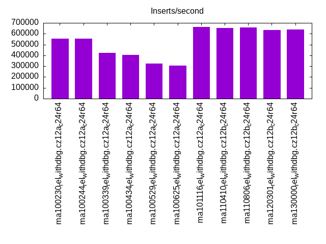
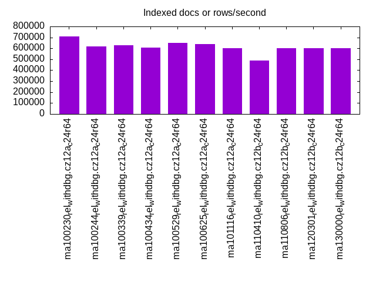
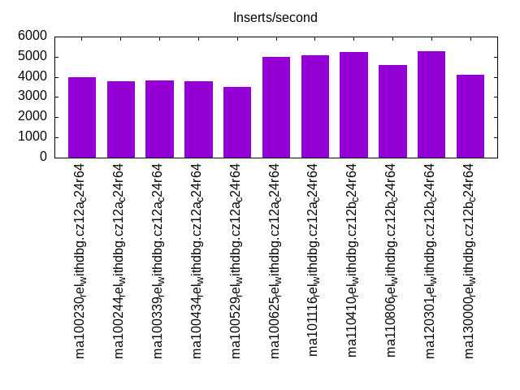
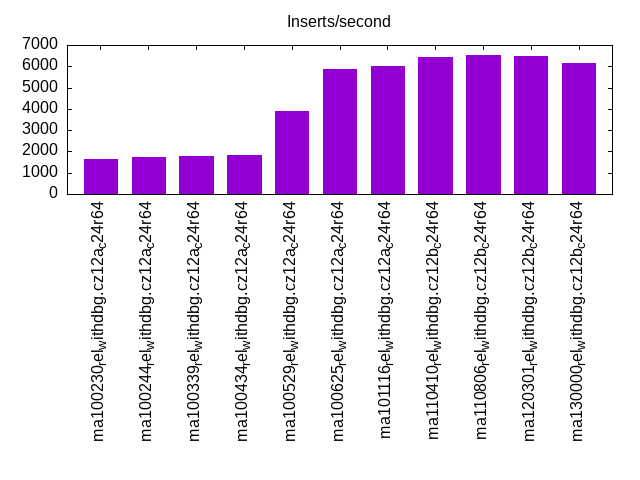
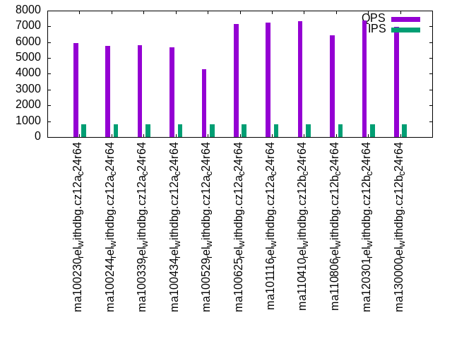
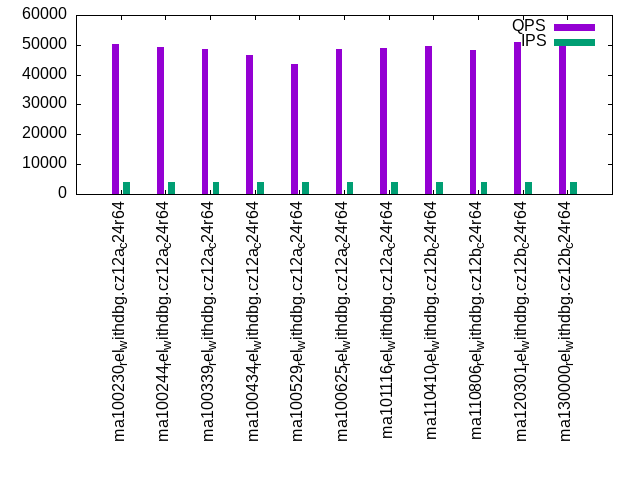
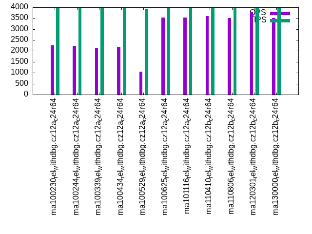
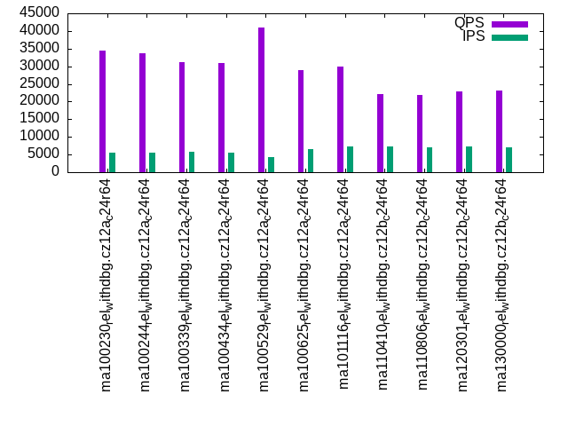
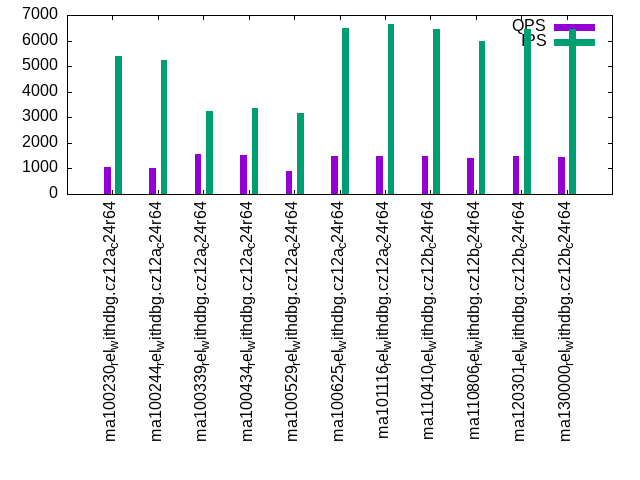

This is a report for the insert benchmark with 2000M docs and 8 client(s). It is generated by scripts (bash, awk, sed) and Tufte might not be impressed. An overview of the insert benchmark is here and a short update is here. Below, by DBMS, I mean DBMS+version.config. An example is my8020.c10b40 where my means MySQL, 8020 is version 8.0.20 and c10b40 is the name for the configuration file.
The test server has 24 cores, 2 sockets, 64G RAM and 1 NVMe devices. The benchmark was run with 8 clients and there were 1 or 3 connections per client (1 for queries or inserts without rate limits, 1+1 for rate limited inserts+deletes). It uses 8 tables with a table per client. It loads 250M rows per table without secondary indexes, creates 3 secondary indexes per table, then inserts 4m+1m rows per table with a delete per insert to avoid growing the table. It then does 6 read+write tests for 1800s each that do queries as fast as possible with 100,100,500,500,1000,1000 inserts/s and the same for deletes/s per client concurrent with the queries. The database is larger than RAM and most tests are IO-bound except for the range query (qr*) tests that frequently have a cached working set. Clients and the DBMS share one server.
The tested DBMS are:
The numbers are inserts/s for l.i0, l.i1 and l.i2, indexed docs (or rows) /s for l.x and queries/s for qr100, qp100 thru qr1000, qp1000" The values are the average rate over the entire test for inserts (IPS) and queries (QPS). The range of values for IPS and QPS is split into 3 parts: bottom 25%, middle 50%, top 25%. Values in the bottom 25% have a red background, values in the top 25% have a green background and values in the middle have no color. A gray background is used for values that can be ignored because the DBMS did not sustain the target insert rate. Red backgrounds are not used when the minimum value is within 80% of the max value.
| dbms | l.i0 | l.x | l.i1 | l.i2 | qr100 | qp100 | qr500 | qp500 | qr1000 | qp1000 |
|---|---|---|---|---|---|---|---|---|---|---|
| ma100230_rel_withdbg.cz12a_c24r64 | 553403 | 709723 | 3992 | 1662 | 57574 | 5940 | 50234 | 2246 | 34416 | 1044 |
| ma100244_rel_withdbg.cz12a_c24r64 | 552944 | 618812 | 3768 | 1756 | 57068 | 5760 | 49440 | 2237 | 33655 | 1017 |
| ma100339_rel_withdbg.cz12a_c24r64 | 421674 | 627156 | 3824 | 1803 | 55990 | 5807 | 48610 | 2154 | 31048 | 1580 |
| ma100434_rel_withdbg.cz12a_c24r64 | 402658 | 608828 | 3784 | 1816 | 53678 | 5690 | 46586 | 2194 | 30972 | 1527 |
| ma100529_rel_withdbg.cz12a_c24r64 | 323102 | 648929 | 3492 | 3916 | 53622 | 4300 | 43568 | 1058 | 40904 | 900 |
| ma100625_rel_withdbg.cz12a_c24r64 | 305623 | 640820 | 5000 | 5882 | 57362 | 7160 | 48684 | 3536 | 28801 | 1487 |
| ma101116_rel_withdbg.cz12a_c24r64 | 662690 | 603136 | 5056 | 5997 | 57142 | 7242 | 48775 | 3532 | 29812 | 1475 |
| ma110410_rel_withdbg.cz12b_c24r64 | 654450 | 487805 | 5253 | 6415 | 57991 | 7326 | 49753 | 3588 | 22136 | 1489 |
| ma110806_rel_withdbg.cz12b_c24r64 | 656814 | 603136 | 4609 | 6520 | 58123 | 6458 | 48320 | 3498 | 21895 | 1410 |
| ma120301_rel_withdbg.cz12b_c24r64 | 635122 | 599341 | 5264 | 6462 | 59284 | 7378 | 50872 | 3772 | 22966 | 1487 |
| ma130000_rel_withdbg.cz12b_c24r64 | 639795 | 600240 | 4124 | 6154 | 60007 | 6953 | 51733 | 3500 | 23237 | 1465 |
This table has relative throughput, throughput for the DBMS relative to the DBMS in the first line, using the absolute throughput from the previous table. Values less than 0.95 have a yellow background. Values greater than 1.05 have a blue background.
| dbms | l.i0 | l.x | l.i1 | l.i2 | qr100 | qp100 | qr500 | qp500 | qr1000 | qp1000 |
|---|---|---|---|---|---|---|---|---|---|---|
| ma100230_rel_withdbg.cz12a_c24r64 | 1.00 | 1.00 | 1.00 | 1.00 | 1.00 | 1.00 | 1.00 | 1.00 | 1.00 | 1.00 |
| ma100244_rel_withdbg.cz12a_c24r64 | 1.00 | 0.87 | 0.94 | 1.06 | 0.99 | 0.97 | 0.98 | 1.00 | 0.98 | 0.97 |
| ma100339_rel_withdbg.cz12a_c24r64 | 0.76 | 0.88 | 0.96 | 1.08 | 0.97 | 0.98 | 0.97 | 0.96 | 0.90 | 1.51 |
| ma100434_rel_withdbg.cz12a_c24r64 | 0.73 | 0.86 | 0.95 | 1.09 | 0.93 | 0.96 | 0.93 | 0.98 | 0.90 | 1.46 |
| ma100529_rel_withdbg.cz12a_c24r64 | 0.58 | 0.91 | 0.87 | 2.36 | 0.93 | 0.72 | 0.87 | 0.47 | 1.19 | 0.86 |
| ma100625_rel_withdbg.cz12a_c24r64 | 0.55 | 0.90 | 1.25 | 3.54 | 1.00 | 1.21 | 0.97 | 1.57 | 0.84 | 1.42 |
| ma101116_rel_withdbg.cz12a_c24r64 | 1.20 | 0.85 | 1.27 | 3.61 | 0.99 | 1.22 | 0.97 | 1.57 | 0.87 | 1.41 |
| ma110410_rel_withdbg.cz12b_c24r64 | 1.18 | 0.69 | 1.32 | 3.86 | 1.01 | 1.23 | 0.99 | 1.60 | 0.64 | 1.43 |
| ma110806_rel_withdbg.cz12b_c24r64 | 1.19 | 0.85 | 1.15 | 3.92 | 1.01 | 1.09 | 0.96 | 1.56 | 0.64 | 1.35 |
| ma120301_rel_withdbg.cz12b_c24r64 | 1.15 | 0.84 | 1.32 | 3.89 | 1.03 | 1.24 | 1.01 | 1.68 | 0.67 | 1.42 |
| ma130000_rel_withdbg.cz12b_c24r64 | 1.16 | 0.85 | 1.03 | 3.70 | 1.04 | 1.17 | 1.03 | 1.56 | 0.68 | 1.40 |
This lists the average rate of inserts/s for the tests that do inserts concurrent with queries. For such tests the query rate is listed in the table above. The read+write tests are setup so that the insert rate should match the target rate every second. Cells that are not at least 95% of the target have a red background to indicate a failure to satisfy the target.
| dbms | qr100.L1 | qp100.L2 | qr500.L3 | qp500.L4 | qr1000.L5 | qp1000.L6 |
|---|---|---|---|---|---|---|
| ma100230_rel_withdbg.cz12a_c24r64 | 796 | 797 | 3984 | 3982 | 5500 | 5381 |
| ma100244_rel_withdbg.cz12a_c24r64 | 797 | 796 | 3984 | 3984 | 5500 | 5227 |
| ma100339_rel_withdbg.cz12a_c24r64 | 796 | 797 | 3984 | 3982 | 5696 | 3264 |
| ma100434_rel_withdbg.cz12a_c24r64 | 796 | 797 | 3984 | 3982 | 5528 | 3352 |
| ma100529_rel_withdbg.cz12a_c24r64 | 797 | 796 | 3982 | 3930 | 4378 | 3150 |
| ma100625_rel_withdbg.cz12a_c24r64 | 797 | 796 | 3982 | 3982 | 6551 | 6507 |
| ma101116_rel_withdbg.cz12a_c24r64 | 796 | 797 | 3984 | 3984 | 7168 | 6654 |
| ma110410_rel_withdbg.cz12b_c24r64 | 797 | 796 | 3982 | 3984 | 7168 | 6466 |
| ma110806_rel_withdbg.cz12b_c24r64 | 797 | 797 | 3958 | 3984 | 7083 | 5970 |
| ma120301_rel_withdbg.cz12b_c24r64 | 796 | 797 | 3984 | 3982 | 7328 | 6460 |
| ma130000_rel_withdbg.cz12b_c24r64 | 797 | 797 | 3982 | 3984 | 7111 | 6446 |
| target | 800 | 800 | 4000 | 4000 | 8000 | 8000 |
l.i0: load without secondary indexes. Graphs for performance per 1-second interval are here.
Average throughput:

Insert response time histogram: each cell has the percentage of responses that take <= the time in the header and max is the max response time in seconds. For the max column values in the top 25% of the range have a red background and in the bottom 25% of the range have a green background. The red background is not used when the min value is within 80% of the max value.
| dbms | 256us | 1ms | 4ms | 16ms | 64ms | 256ms | 1s | 4s | 16s | gt | max |
|---|---|---|---|---|---|---|---|---|---|---|---|
| ma100230_rel_withdbg.cz12a_c24r64 | 0.153 | 99.750 | 0.038 | 0.026 | 0.032 | 0.002 | 0.274 | ||||
| ma100244_rel_withdbg.cz12a_c24r64 | 0.292 | 99.605 | 0.042 | 0.027 | 0.033 | 0.001 | 0.275 | ||||
| ma100339_rel_withdbg.cz12a_c24r64 | 0.233 | 99.564 | 0.089 | 0.076 | 0.036 | 0.002 | 0.420 | ||||
| ma100434_rel_withdbg.cz12a_c24r64 | 0.119 | 99.790 | 0.033 | 0.024 | 0.033 | nonzero | 0.276 | ||||
| ma100529_rel_withdbg.cz12a_c24r64 | 0.217 | 99.379 | 0.112 | 0.256 | 0.035 | 0.236 | |||||
| ma100625_rel_withdbg.cz12a_c24r64 | 0.244 | 99.356 | 0.288 | 0.075 | 0.037 | nonzero | 0.304 | ||||
| ma101116_rel_withdbg.cz12a_c24r64 | 15.719 | 84.128 | 0.045 | 0.069 | 0.036 | 0.001 | 0.341 | ||||
| ma110410_rel_withdbg.cz12b_c24r64 | 11.933 | 87.914 | 0.039 | 0.079 | 0.033 | 0.002 | 0.322 | ||||
| ma110806_rel_withdbg.cz12b_c24r64 | 30.496 | 69.348 | 0.039 | 0.082 | 0.034 | 0.001 | 0.360 | ||||
| ma120301_rel_withdbg.cz12b_c24r64 | 16.344 | 83.469 | 0.053 | 0.076 | 0.052 | 0.006 | nonzero | 1.374 | |||
| ma130000_rel_withdbg.cz12b_c24r64 | 23.193 | 76.653 | 0.034 | 0.084 | 0.034 | 0.001 | 0.338 |
Performance metrics for the DBMS listed above. Some are normalized by throughput, others are not. Legend for results is here.
ips qps rps rmbps wps wmbps rpq rkbpq wpi wkbpi csps cpups cspq cpupq dbgb1 dbgb2 rss maxop p50 p99 tag 553403 0 1 0.0 3693.8 201.4 0.000 0.000 0.007 0.373 72124 44.4 0.130 19 131.6 182.4 47.1 0.274 71991 53993 ma100230_rel_withdbg.cz12a_c24r64 552944 0 1 0.0 3709.3 201.9 0.000 0.000 0.007 0.374 72240 44.1 0.131 19 131.6 182.4 47.0 0.275 72390 54793 ma100244_rel_withdbg.cz12a_c24r64 421674 0 1 0.0 2951.7 165.0 0.000 0.000 0.007 0.401 61429 65.0 0.146 37 131.6 182.5 47.0 0.420 54992 35694 ma100339_rel_withdbg.cz12a_c24r64 402658 0 1 0.0 2817.1 157.1 0.000 0.000 0.007 0.400 55903 65.1 0.139 39 131.6 182.4 NA 0.276 51791 39295 ma100434_rel_withdbg.cz12a_c24r64 323102 0 1 0.0 2464.9 101.4 0.000 0.000 0.008 0.321 583192 54.6 1.805 41 131.6 182.4 45.9 0.236 41296 32596 ma100529_rel_withdbg.cz12a_c24r64 305623 0 0 0.0 1868.2 86.3 0.000 0.000 0.006 0.289 669730 54.3 2.191 43 131.6 182.4 45.6 0.304 38595 29396 ma100625_rel_withdbg.cz12a_c24r64 662690 0 2 0.0 3965.0 178.4 0.000 0.000 0.006 0.276 114667 46.6 0.173 17 131.6 182.4 45.6 0.341 87487 66292 ma101116_rel_withdbg.cz12a_c24r64 654450 0 2 0.0 3846.4 175.1 0.000 0.000 0.006 0.274 114951 46.3 0.176 17 131.6 182.4 45.6 0.322 85690 64692 ma110410_rel_withdbg.cz12b_c24r64 656814 0 2 0.0 3445.7 169.3 0.000 0.000 0.005 0.264 124029 46.3 0.189 17 131.6 182.4 45.6 0.360 81590 61493 ma110806_rel_withdbg.cz12b_c24r64 635122 0 2 0.0 3802.9 171.1 0.000 0.000 0.006 0.276 114449 45.1 0.180 17 131.6 182.4 45.6 1.374 82890 46494 ma120301_rel_withdbg.cz12b_c24r64 639795 0 1 0.0 3355.7 165.0 0.000 0.000 0.005 0.264 124764 45.8 0.195 17 131.6 182.4 45.6 0.338 78191 59393 ma130000_rel_withdbg.cz12b_c24r64
Average values from iostat.
r/s rkB/s rrqm/s %rrqm r_await rareq-s w/s wkB/s wrqm/s %wrqm w_await wareq-s d/s dkB/s drqm/s %drqm d_await dareq-s f/s f_await aqu-sz %util 1.413 11.94 0.000 0.000 5.679 5.270 3693.8 206191 99.91 2.776 6.280 57.09 0.994 4.648 0.000 0.000 0.277 4.564 0.000 0.000 22.32 13.22 ma100230_rel_withdbg.cz12a_c24r64 1.446 12.48 0.000 0.000 5.126 5.213 3709.3 206713 99.88 2.753 6.127 56.90 1.045 4.641 0.000 0.000 0.271 4.375 0.000 0.000 21.90 13.28 ma100244_rel_withdbg.cz12a_c24r64 1.089 9.311 0.000 0.000 5.328 4.826 2951.7 168912 74.78 2.697 6.763 60.58 1.404 14.10 0.000 0.000 0.250 4.791 0.000 0.000 17.92 10.95 ma100339_rel_withdbg.cz12a_c24r64 1.046 9.133 0.000 0.000 5.064 4.790 2817.1 160871 68.40 2.628 6.758 60.95 0.808 10.78 0.000 0.000 0.252 7.939 0.000 0.000 16.97 10.39 ma100434_rel_withdbg.cz12a_c24r64 0.644 4.605 0.002 0.048 5.323 4.413 2464.9 103787 69.97 2.751 4.307 41.62 0.522 2.923 0.000 0.000 0.198 3.633 0.000 0.000 11.04 7.291 ma100529_rel_withdbg.cz12a_c24r64 0.465 4.168 0.003 0.057 4.132 2.976 1868.2 88384.0 44.99 2.890 7.374 53.55 0.354 14.07 0.000 0.000 0.179 32.39 0.000 0.000 12.59 6.479 ma100625_rel_withdbg.cz12a_c24r64 1.479 11.04 0.004 0.090 6.622 5.026 3965.0 182720 104.9 2.838 6.933 48.50 1.320 6.255 0.000 0.000 0.283 4.702 0.000 0.000 26.26 13.47 ma101116_rel_withdbg.cz12a_c24r64 1.501 10.92 0.004 0.090 5.935 4.804 3846.4 179314 109.8 3.142 7.781 51.05 0.979 9.100 0.000 0.000 0.285 10.24 0.000 0.000 28.03 13.29 ma110410_rel_withdbg.cz12b_c24r64 1.557 11.49 0.015 0.231 6.362 4.908 3445.7 173359 110.1 3.535 8.737 56.50 1.102 15.80 0.000 0.000 0.265 13.27 0.000 0.000 27.25 12.75 ma110806_rel_withdbg.cz12b_c24r64 1.530 10.84 0.000 0.000 6.074 4.821 3802.9 175216 108.6 3.148 7.822 50.56 0.897 11.26 0.000 0.000 0.272 13.61 0.000 0.000 27.67 12.97 ma120301_rel_withdbg.cz12b_c24r64 1.191 9.612 0.000 0.000 4.013 3.780 3355.7 168934 104.9 3.417 8.795 55.29 0.783 9.944 0.000 0.000 0.263 12.98 0.000 0.000 27.40 12.30 ma130000_rel_withdbg.cz12b_c24r64
l.x: create secondary indexes.
Average throughput:

Performance metrics for the DBMS listed above. Some are normalized by throughput, others are not. Legend for results is here.
ips qps rps rmbps wps wmbps rpq rkbpq wpi wkbpi csps cpups cspq cpupq dbgb1 dbgb2 rss maxop p50 p99 tag 709723 0 7052 618.9 10105.5 724.9 0.010 0.893 0.014 1.046 49653 24.1 0.070 8 302.9 353.7 47.5 0.005 NA NA ma100230_rel_withdbg.cz12a_c24r64 618812 0 6283 555.9 7583.1 673.3 0.010 0.920 0.012 1.114 24892 22.1 0.040 9 302.9 353.7 46.4 0.006 NA NA ma100244_rel_withdbg.cz12a_c24r64 627156 0 6420 569.1 7582.9 679.9 0.010 0.929 0.012 1.110 24214 23.7 0.039 9 302.9 353.7 47.4 0.005 NA NA ma100339_rel_withdbg.cz12a_c24r64 608828 0 6215 550.0 7686.7 668.5 0.010 0.925 0.013 1.124 24829 22.1 0.041 9 299.8 350.6 NA 0.005 NA NA ma100434_rel_withdbg.cz12a_c24r64 648929 0 6518 573.8 7647.7 669.2 0.010 0.905 0.012 1.056 34676 26.8 0.053 10 299.8 350.6 46.3 0.006 NA NA ma100529_rel_withdbg.cz12a_c24r64 640820 0 6884 560.7 7820.1 664.8 0.011 0.896 0.012 1.062 31532 26.6 0.049 10 278.8 329.6 45.8 0.005 NA NA ma100625_rel_withdbg.cz12a_c24r64 603136 0 7260 526.4 7077.1 619.6 0.012 0.894 0.012 1.052 28188 26.0 0.047 10 278.8 329.6 45.8 0.012 NA NA ma101116_rel_withdbg.cz12a_c24r64 487805 0 4986 401.4 6034.8 505.8 0.010 0.843 0.012 1.062 25128 23.3 0.052 11 278.8 329.6 45.3 0.015 NA NA ma110410_rel_withdbg.cz12b_c24r64 603136 0 6083 488.6 7524.5 626.6 0.010 0.830 0.012 1.064 30120 26.1 0.050 10 278.8 329.6 45.3 0.002 NA NA ma110806_rel_withdbg.cz12b_c24r64 599341 0 6561 544.3 7031.2 615.8 0.011 0.930 0.012 1.052 28430 25.9 0.047 10 278.8 329.6 45.8 0.003 NA NA ma120301_rel_withdbg.cz12b_c24r64 600240 0 6411 528.3 7488.2 623.8 0.011 0.901 0.012 1.064 33205 24.5 0.055 10 278.8 329.6 45.8 0.005 NA NA ma130000_rel_withdbg.cz12b_c24r64
Average values from iostat.
r/s rkB/s rrqm/s %rrqm r_await rareq-s w/s wkB/s wrqm/s %wrqm w_await wareq-s d/s dkB/s drqm/s %drqm d_await dareq-s f/s f_await aqu-sz %util 7051.6 633772 0.000 0.000 0.390 90.80 10105.5 742335 175.0 1.059 15.55 109.5 4.935 46550.0 0.000 0.000 0.022 326.9 0.000 0.000 118.4 80.68 ma100230_rel_withdbg.cz12a_c24r64 6283.1 569213 0.015 0.001 0.697 104.9 7583.1 689470 173.0 1.560 18.55 104.3 4.896 46282.2 0.000 0.000 0.021 303.8 0.000 0.000 154.1 80.34 ma100244_rel_withdbg.cz12a_c24r64 6419.9 582784 0.020 0.001 0.668 105.0 7582.9 696238 185.1 1.547 19.40 104.8 5.475 50522.6 0.000 0.000 0.013 233.3 0.000 0.000 162.2 80.93 ma100339_rel_withdbg.cz12a_c24r64 6214.9 563178 0.001 0.000 0.676 104.8 7686.7 684520 176.0 1.590 17.21 101.9 5.842 52348.2 0.000 0.000 0.019 337.6 0.000 0.000 144.9 81.04 ma100434_rel_withdbg.cz12a_c24r64 6518.4 587539 0.011 0.000 0.492 102.1 7647.7 685246 148.9 1.769 24.91 112.0 5.960 52209.3 0.000 0.000 0.013 159.3 0.000 0.000 216.8 73.24 ma100529_rel_withdbg.cz12a_c24r64 6883.7 574186 0.011 0.000 0.381 98.42 7820.1 680728 123.9 1.520 20.60 112.4 5.851 51503.3 0.000 0.000 0.022 284.1 0.000 0.000 196.0 81.53 ma100625_rel_withdbg.cz12a_c24r64 7260.0 539040 0.011 0.002 0.451 92.93 7077.1 634480 141.4 2.005 25.81 106.1 5.617 51896.6 0.000 0.000 0.018 236.8 0.000 0.000 243.4 77.83 ma101116_rel_withdbg.cz12a_c24r64 4985.6 411042 0.032 0.001 0.448 94.69 6034.8 517949 109.0 2.126 17.29 99.50 4.695 41945.7 0.000 0.000 0.015 218.3 0.000 0.000 157.7 62.21 ma110410_rel_withdbg.cz12b_c24r64 6083.4 500314 0.020 0.001 0.473 99.97 7524.5 641652 157.8 2.501 25.34 92.55 5.498 48907.0 0.000 0.000 0.019 257.1 0.000 0.000 246.1 76.70 ma110806_rel_withdbg.cz12b_c24r64 6561.0 557361 0.056 0.002 0.441 100.4 7031.2 630608 136.3 1.971 23.91 107.1 4.621 40557.9 0.000 0.000 0.019 202.9 0.000 0.000 217.4 76.27 ma120301_rel_withdbg.cz12b_c24r64 6411.1 540958 0.014 0.000 0.514 100.9 7488.2 638775 157.1 2.392 26.51 93.39 5.921 48261.3 0.000 0.000 0.015 135.5 0.000 0.000 247.0 78.19 ma130000_rel_withdbg.cz12b_c24r64
l.i1: continue load after secondary indexes created with 50 inserts per transaction. Graphs for performance per 1-second interval are here.
Average throughput:

Insert response time histogram: each cell has the percentage of responses that take <= the time in the header and max is the max response time in seconds. For the max column values in the top 25% of the range have a red background and in the bottom 25% of the range have a green background. The red background is not used when the min value is within 80% of the max value.
| dbms | 256us | 1ms | 4ms | 16ms | 64ms | 256ms | 1s | 4s | 16s | gt | max |
|---|---|---|---|---|---|---|---|---|---|---|---|
| ma100230_rel_withdbg.cz12a_c24r64 | 19.636 | 77.406 | 2.958 | 0.457 | |||||||
| ma100244_rel_withdbg.cz12a_c24r64 | 11.267 | 85.278 | 3.454 | 0.517 | |||||||
| ma100339_rel_withdbg.cz12a_c24r64 | 15.353 | 81.552 | 3.094 | 0.508 | |||||||
| ma100434_rel_withdbg.cz12a_c24r64 | 0.001 | 11.964 | 84.989 | 3.047 | 0.450 | ||||||
| ma100529_rel_withdbg.cz12a_c24r64 | 0.016 | 11.008 | 79.631 | 9.345 | 0.753 | ||||||
| ma100625_rel_withdbg.cz12a_c24r64 | 0.107 | 34.254 | 63.843 | 1.796 | 0.613 | ||||||
| ma101116_rel_withdbg.cz12a_c24r64 | 0.098 | 34.725 | 63.420 | 1.757 | 0.620 | ||||||
| ma110410_rel_withdbg.cz12b_c24r64 | 0.041 | 31.889 | 67.251 | 0.819 | 0.748 | ||||||
| ma110806_rel_withdbg.cz12b_c24r64 | 0.090 | 29.901 | 68.462 | 1.542 | 0.005 | 2.185 | |||||
| ma120301_rel_withdbg.cz12b_c24r64 | 0.068 | 31.924 | 67.478 | 0.530 | 0.870 | ||||||
| ma130000_rel_withdbg.cz12b_c24r64 | 0.093 | 21.672 | 75.800 | 2.089 | 0.345 | 2.460 |
Delete response time histogram: each cell has the percentage of responses that take <= the time in the header and max is the max response time in seconds. For the max column values in the top 25% of the range have a red background and in the bottom 25% of the range have a green background. The red background is not used when the min value is within 80% of the max value.
| dbms | 256us | 1ms | 4ms | 16ms | 64ms | 256ms | 1s | 4s | 16s | gt | max |
|---|---|---|---|---|---|---|---|---|---|---|---|
| ma100230_rel_withdbg.cz12a_c24r64 | 0.185 | 70.341 | 29.470 | 0.005 | 0.330 | ||||||
| ma100244_rel_withdbg.cz12a_c24r64 | 0.011 | 64.533 | 35.451 | 0.005 | 0.307 | ||||||
| ma100339_rel_withdbg.cz12a_c24r64 | 0.007 | 68.089 | 31.634 | 0.270 | 0.377 | ||||||
| ma100434_rel_withdbg.cz12a_c24r64 | 0.033 | 65.808 | 34.154 | 0.005 | 0.306 | ||||||
| ma100529_rel_withdbg.cz12a_c24r64 | 0.062 | 77.980 | 21.177 | 0.781 | 0.729 | ||||||
| ma100625_rel_withdbg.cz12a_c24r64 | 2.447 | 77.653 | 18.799 | 1.102 | 0.576 | ||||||
| ma101116_rel_withdbg.cz12a_c24r64 | 2.133 | 80.695 | 16.118 | 1.053 | 0.584 | ||||||
| ma110410_rel_withdbg.cz12b_c24r64 | 0.730 | 88.789 | 10.100 | 0.381 | 0.662 | ||||||
| ma110806_rel_withdbg.cz12b_c24r64 | 0.184 | 76.738 | 22.558 | 0.518 | 0.002 | 2.118 | |||||
| ma120301_rel_withdbg.cz12b_c24r64 | 0.820 | 84.355 | 14.535 | 0.291 | 0.855 | ||||||
| ma130000_rel_withdbg.cz12b_c24r64 | 0.421 | 67.063 | 31.181 | 1.133 | 0.202 | 2.386 |
Performance metrics for the DBMS listed above. Some are normalized by throughput, others are not. Legend for results is here.
ips qps rps rmbps wps wmbps rpq rkbpq wpi wkbpi csps cpups cspq cpupq dbgb1 dbgb2 rss maxop p50 p99 tag 3992 0 18733 292.7 27703.6 682.5 4.693 75.092 6.941 175.101 153161 13.2 38.372 794 399.6 451.6 47.3 0.457 500 300 ma100230_rel_withdbg.cz12a_c24r64 3768 0 18076 282.4 27060.8 665.6 4.798 76.759 7.182 180.900 144005 14.7 38.220 936 393.3 445.1 47.1 0.517 450 300 ma100244_rel_withdbg.cz12a_c24r64 3824 0 18326 286.3 27542.1 676.1 4.792 76.674 7.202 181.042 151012 13.5 39.490 847 393.6 445.8 47.0 0.508 500 300 ma100339_rel_withdbg.cz12a_c24r64 3784 0 18264 285.4 27323.1 671.1 4.826 77.223 7.220 181.598 151334 13.4 39.991 850 390.3 442.3 NA 0.450 450 300 ma100434_rel_withdbg.cz12a_c24r64 3492 0 16712 261.1 19821.6 542.9 4.785 76.563 5.676 159.185 230150 11.5 65.902 790 361.2 412.0 45.8 0.753 450 300 ma100529_rel_withdbg.cz12a_c24r64 5000 0 23842 372.5 23633.7 651.3 4.768 76.286 4.727 133.394 290091 14.8 58.018 710 332.6 383.5 45.2 0.613 650 350 ma100625_rel_withdbg.cz12a_c24r64 5056 0 24121 376.8 23829.8 655.8 4.771 76.313 4.713 132.825 302602 14.8 59.850 703 332.7 383.5 45.2 0.620 650 350 ma101116_rel_withdbg.cz12a_c24r64 5253 0 25360 396.2 24115.2 664.8 4.828 77.230 4.591 129.603 310160 13.7 59.048 626 332.7 383.5 45.2 0.748 700 250 ma110410_rel_withdbg.cz12b_c24r64 4609 0 22262 347.8 20735.6 571.2 4.830 77.272 4.499 126.920 306594 13.0 66.522 677 332.7 383.5 45.2 2.185 650 200 ma110806_rel_withdbg.cz12b_c24r64 5264 0 25438 397.2 24167.9 664.5 4.833 77.276 4.591 129.255 319630 13.9 60.720 634 332.7 383.5 45.2 0.870 700 400 ma120301_rel_withdbg.cz12b_c24r64 4124 0 19929 311.2 18789.9 516.3 4.832 77.269 4.556 128.197 289630 12.1 70.227 704 332.7 383.5 45.2 2.460 500 0 ma130000_rel_withdbg.cz12b_c24r64
Average values from iostat.
r/s rkB/s rrqm/s %rrqm r_await rareq-s w/s wkB/s wrqm/s %wrqm w_await wareq-s d/s dkB/s drqm/s %drqm d_await dareq-s f/s f_await aqu-sz %util 18733.1 299728 0.000 0.000 0.395 16.00 27703.6 698916 134.1 0.504 1.101 25.28 0.338 6.553 0.000 0.000 0.048 3.806 0.000 0.000 37.46 99.96 ma100230_rel_withdbg.cz12a_c24r64 18076.4 289213 0.007 0.000 0.407 16.00 27060.8 681594 128.9 0.482 1.059 25.21 0.492 28.17 0.000 0.000 0.063 13.81 0.000 0.000 35.98 99.96 ma100244_rel_withdbg.cz12a_c24r64 18325.5 293203 0.000 0.000 0.390 16.00 27542.1 692305 138.2 0.507 1.042 25.17 0.012 0.922 0.000 0.000 0.018 4.485 0.000 0.000 35.73 99.96 ma100339_rel_withdbg.cz12a_c24r64 18264.3 292226 0.000 0.000 0.400 16.00 27323.1 687202 124.2 0.462 1.064 25.18 0.086 7.948 0.000 0.000 0.042 21.63 0.000 0.000 36.23 99.96 ma100434_rel_withdbg.cz12a_c24r64 16712.1 267381 0.000 0.000 0.331 16.00 19821.6 555921 39.14 0.195 1.003 28.05 0.048 1.224 0.000 0.000 0.053 4.290 0.000 0.000 25.37 97.81 ma100529_rel_withdbg.cz12a_c24r64 23841.9 381430 0.004 0.000 0.538 16.00 23633.7 666969 37.79 0.160 1.253 28.24 0.028 1.941 0.000 0.000 0.036 9.652 0.000 0.000 42.28 99.38 ma100625_rel_withdbg.cz12a_c24r64 24120.7 385840 0.005 0.000 0.528 16.00 23829.8 671562 294.0 1.102 1.240 28.22 0.028 6.672 0.000 0.000 0.039 31.44 0.000 0.000 42.17 99.19 ma101116_rel_withdbg.cz12a_c24r64 25360.5 405666 0.004 0.000 0.513 16.00 24115.2 680763 267.3 1.150 1.137 28.42 0.025 12.58 0.000 0.000 0.032 50.80 0.000 0.000 40.48 98.43 ma110410_rel_withdbg.cz12b_c24r64 22261.5 356139 0.010 0.000 0.380 16.00 20735.6 584960 503.4 2.931 0.819 28.17 0.023 7.718 0.000 0.000 0.029 35.28 0.000 0.000 27.29 88.76 ma110806_rel_withdbg.cz12b_c24r64 25438.4 406778 0.013 0.000 0.493 15.99 24167.9 680397 309.7 1.110 1.111 28.21 0.029 0.142 0.000 0.000 0.035 0.624 0.000 0.000 39.46 98.08 ma120301_rel_withdbg.cz12b_c24r64 19928.6 318674 0.009 0.000 0.393 15.99 18789.9 528712 223.7 0.993 0.893 28.22 0.023 24.33 0.000 0.000 0.032 115.4 0.000 0.000 26.20 84.39 ma130000_rel_withdbg.cz12b_c24r64
l.i2: continue load after secondary indexes created with 5 inserts per transaction. Graphs for performance per 1-second interval are here.
Average throughput:

Insert response time histogram: each cell has the percentage of responses that take <= the time in the header and max is the max response time in seconds. For the max column values in the top 25% of the range have a red background and in the bottom 25% of the range have a green background. The red background is not used when the min value is within 80% of the max value.
| dbms | 256us | 1ms | 4ms | 16ms | 64ms | 256ms | 1s | 4s | 16s | gt | max |
|---|---|---|---|---|---|---|---|---|---|---|---|
| ma100230_rel_withdbg.cz12a_c24r64 | 0.014 | 6.426 | 44.437 | 48.342 | 0.782 | 0.106 | |||||
| ma100244_rel_withdbg.cz12a_c24r64 | 0.010 | 5.283 | 47.936 | 45.841 | 0.930 | 0.099 | |||||
| ma100339_rel_withdbg.cz12a_c24r64 | 0.017 | 6.924 | 49.161 | 43.160 | 0.738 | 0.100 | |||||
| ma100434_rel_withdbg.cz12a_c24r64 | 0.012 | 5.866 | 50.921 | 42.368 | 0.833 | 0.133 | |||||
| ma100529_rel_withdbg.cz12a_c24r64 | 0.011 | 5.645 | 81.386 | 12.898 | 0.059 | 0.001 | 0.460 | ||||
| ma100625_rel_withdbg.cz12a_c24r64 | 0.052 | 16.598 | 82.327 | 0.502 | 0.504 | 0.017 | 0.440 | ||||
| ma101116_rel_withdbg.cz12a_c24r64 | 0.046 | 15.233 | 83.883 | 0.483 | 0.345 | 0.011 | 0.391 | ||||
| ma110410_rel_withdbg.cz12b_c24r64 | 0.049 | 15.595 | 83.820 | 0.514 | 0.020 | 0.002 | 0.667 | ||||
| ma110806_rel_withdbg.cz12b_c24r64 | 0.053 | 19.486 | 79.715 | 0.739 | 0.008 | 0.087 | |||||
| ma120301_rel_withdbg.cz12b_c24r64 | 0.040 | 19.168 | 80.022 | 0.747 | 0.017 | 0.005 | 0.554 | ||||
| ma130000_rel_withdbg.cz12b_c24r64 | 0.042 | 13.958 | 85.416 | 0.542 | 0.042 | nonzero | 0.260 |
Delete response time histogram: each cell has the percentage of responses that take <= the time in the header and max is the max response time in seconds. For the max column values in the top 25% of the range have a red background and in the bottom 25% of the range have a green background. The red background is not used when the min value is within 80% of the max value.
| dbms | 256us | 1ms | 4ms | 16ms | 64ms | 256ms | 1s | 4s | 16s | gt | max |
|---|---|---|---|---|---|---|---|---|---|---|---|
| ma100230_rel_withdbg.cz12a_c24r64 | 0.102 | 15.699 | 39.118 | 45.001 | 0.080 | 0.137 | |||||
| ma100244_rel_withdbg.cz12a_c24r64 | 0.068 | 13.057 | 44.465 | 42.341 | 0.069 | 0.165 | |||||
| ma100339_rel_withdbg.cz12a_c24r64 | 0.132 | 17.361 | 43.859 | 38.491 | 0.157 | 0.138 | |||||
| ma100434_rel_withdbg.cz12a_c24r64 | 0.092 | 15.143 | 46.803 | 37.782 | 0.180 | 0.150 | |||||
| ma100529_rel_withdbg.cz12a_c24r64 | 0.051 | 15.940 | 72.998 | 10.999 | 0.012 | nonzero | 0.434 | ||||
| ma100625_rel_withdbg.cz12a_c24r64 | 0.167 | 29.727 | 69.288 | 0.391 | 0.423 | 0.004 | 0.454 | ||||
| ma101116_rel_withdbg.cz12a_c24r64 | 0.159 | 28.383 | 70.817 | 0.345 | 0.294 | 0.001 | 0.301 | ||||
| ma110410_rel_withdbg.cz12b_c24r64 | 0.122 | 27.887 | 71.661 | 0.312 | 0.017 | 0.001 | 0.635 | ||||
| ma110806_rel_withdbg.cz12b_c24r64 | 0.131 | 34.523 | 64.881 | 0.460 | 0.006 | 0.087 | |||||
| ma120301_rel_withdbg.cz12b_c24r64 | 0.116 | 33.490 | 65.913 | 0.461 | 0.016 | 0.004 | 0.523 | ||||
| ma130000_rel_withdbg.cz12b_c24r64 | 0.110 | 25.093 | 74.406 | 0.354 | 0.037 | nonzero | 0.264 |
Performance metrics for the DBMS listed above. Some are normalized by throughput, others are not. Legend for results is here.
ips qps rps rmbps wps wmbps rpq rkbpq wpi wkbpi csps cpups cspq cpupq dbgb1 dbgb2 rss maxop p50 p99 tag 1662 0 19585 306.0 26469.0 685.6 11.783 188.530 15.925 422.394 138773 13.1 83.493 1892 400.5 452.5 47.3 0.106 120 85 ma100230_rel_withdbg.cz12a_c24r64 1756 0 18427 287.9 25234.7 651.5 10.494 167.909 14.371 379.937 130991 14.5 74.600 1982 394.4 446.3 47.1 0.099 135 90 ma100244_rel_withdbg.cz12a_c24r64 1803 0 18921 295.6 25882.9 671.0 10.492 167.867 14.352 381.030 136061 12.9 75.447 1717 393.6 445.8 47.0 0.100 130 80 ma100339_rel_withdbg.cz12a_c24r64 1816 0 18489 288.9 25371.0 656.5 10.179 162.854 13.967 370.065 132536 12.9 72.962 1704 390.3 442.3 NA 0.133 140 80 ma100434_rel_withdbg.cz12a_c24r64 3916 0 16992 265.5 19501.6 539.8 4.339 69.428 4.980 141.171 246345 14.3 62.911 876 361.2 412.2 45.8 0.460 490 440 ma100529_rel_withdbg.cz12a_c24r64 5882 0 25595 399.9 24208.3 673.4 4.351 69.618 4.115 117.222 323761 18.2 55.040 743 332.7 383.5 45.2 0.440 745 535 ma100625_rel_withdbg.cz12a_c24r64 5997 0 26127 408.2 24022.8 670.0 4.357 69.706 4.006 114.410 337086 18.3 56.209 732 332.7 383.5 45.2 0.391 785 535 ma101116_rel_withdbg.cz12a_c24r64 6415 0 28361 443.1 24834.7 691.5 4.421 70.733 3.871 110.373 353662 17.9 55.128 670 332.7 383.5 45.2 0.667 815 580 ma110410_rel_withdbg.cz12b_c24r64 6520 0 28816 450.2 25124.1 699.7 4.420 70.711 3.853 109.900 364699 18.4 55.936 677 332.7 383.5 45.2 0.087 805 720 ma110806_rel_withdbg.cz12b_c24r64 6462 0 28632 447.2 25006.2 696.2 4.431 70.861 3.870 110.330 362636 18.3 56.118 680 332.7 383.5 45.2 0.554 815 560 ma120301_rel_withdbg.cz12b_c24r64 6154 0 27208 425.0 23922.4 666.1 4.421 70.729 3.887 110.836 343383 17.0 55.800 663 332.7 383.5 45.2 0.260 780 580 ma130000_rel_withdbg.cz12b_c24r64
Average values from iostat.
r/s rkB/s rrqm/s %rrqm r_await rareq-s w/s wkB/s wrqm/s %wrqm w_await wareq-s d/s dkB/s drqm/s %drqm d_await dareq-s f/s f_await aqu-sz %util 19584.8 313356 0.000 0.000 0.317 16.00 26469.0 702061 34.35 0.129 0.869 26.58 0.006 0.026 0.000 0.000 0.008 0.129 0.000 0.000 29.27 99.82 ma100230_rel_withdbg.cz12a_c24r64 18427.0 294832 0.000 0.000 0.351 16.00 25234.7 667131 35.29 0.139 0.929 26.49 0.005 0.037 0.000 0.000 0.007 0.184 0.000 0.000 29.97 99.86 ma100244_rel_withdbg.cz12a_c24r64 18920.7 302731 0.000 0.000 0.326 16.00 25882.9 687149 34.11 0.132 0.883 26.61 0.003 0.016 0.000 0.000 0.006 0.081 0.000 0.000 29.09 99.83 ma100339_rel_withdbg.cz12a_c24r64 18489.3 295824 0.000 0.000 0.342 16.00 25371.0 672224 33.75 0.134 0.880 26.56 0.006 0.024 0.000 0.000 0.009 0.118 0.000 0.000 28.73 99.84 ma100434_rel_withdbg.cz12a_c24r64 16991.8 271868 0.000 0.000 0.321 16.00 19501.6 552796 10.28 0.053 0.787 28.35 0.120 3.216 0.000 0.000 0.059 4.028 0.000 0.000 20.78 97.88 ma100529_rel_withdbg.cz12a_c24r64 25594.8 409515 0.000 0.000 0.502 16.00 24208.3 689534 1.946 0.009 0.998 28.48 0.021 0.097 0.000 0.000 0.031 0.471 0.000 0.000 37.01 99.42 ma100625_rel_withdbg.cz12a_c24r64 26126.7 418025 0.000 0.000 0.515 16.00 24022.8 686116 5.370 0.022 0.995 28.56 0.017 2.785 0.000 0.000 0.026 12.39 0.000 0.000 37.34 99.52 ma101116_rel_withdbg.cz12a_c24r64 28360.7 453770 0.000 0.000 0.493 16.00 24834.7 708073 6.660 0.027 0.962 28.51 0.022 0.884 0.000 0.000 0.025 3.548 0.000 0.000 37.83 99.72 ma110410_rel_withdbg.cz12b_c24r64 28816.5 461032 0.000 0.000 0.444 16.00 25124.1 716536 5.770 0.024 0.849 28.52 0.014 0.245 0.000 0.000 0.018 1.127 0.000 0.000 34.12 99.53 ma110806_rel_withdbg.cz12b_c24r64 28632.3 457903 0.000 0.000 0.450 15.99 25006.2 712950 6.615 0.027 0.864 28.51 0.016 0.431 0.000 0.000 0.020 2.016 0.000 0.000 34.47 99.29 ma120301_rel_withdbg.cz12b_c24r64 27208.1 435251 0.000 0.000 0.517 16.00 23922.4 682062 5.278 0.022 0.954 28.51 0.021 1.012 0.000 0.000 0.025 4.431 0.000 0.000 36.90 99.67 ma130000_rel_withdbg.cz12b_c24r64
qr100.L1: range queries with 100 insert/s per client. Graphs for performance per 1-second interval are here.
Average throughput:
Query response time histogram: each cell has the percentage of responses that take <= the time in the header and max is the max response time in seconds. For max values in the top 25% of the range have a red background and in the bottom 25% of the range have a green background. The red background is not used when the min value is within 80% of the max value.
| dbms | 256us | 1ms | 4ms | 16ms | 64ms | 256ms | 1s | 4s | 16s | gt | max |
|---|---|---|---|---|---|---|---|---|---|---|---|
| ma100230_rel_withdbg.cz12a_c24r64 | 99.713 | 0.230 | 0.057 | 0.001 | nonzero | 0.019 | |||||
| ma100244_rel_withdbg.cz12a_c24r64 | 99.677 | 0.264 | 0.058 | 0.001 | nonzero | 0.019 | |||||
| ma100339_rel_withdbg.cz12a_c24r64 | 99.578 | 0.360 | 0.061 | 0.001 | nonzero | 0.022 | |||||
| ma100434_rel_withdbg.cz12a_c24r64 | 99.511 | 0.421 | 0.066 | 0.001 | nonzero | 0.022 | |||||
| ma100529_rel_withdbg.cz12a_c24r64 | 99.607 | 0.337 | 0.055 | 0.001 | nonzero | 0.031 | |||||
| ma100625_rel_withdbg.cz12a_c24r64 | 99.442 | 0.492 | 0.056 | 0.010 | nonzero | 0.018 | |||||
| ma101116_rel_withdbg.cz12a_c24r64 | 99.442 | 0.497 | 0.051 | 0.009 | 0.015 | ||||||
| ma110410_rel_withdbg.cz12b_c24r64 | 99.468 | 0.475 | 0.048 | 0.009 | nonzero | 0.018 | |||||
| ma110806_rel_withdbg.cz12b_c24r64 | 99.484 | 0.459 | 0.048 | 0.009 | nonzero | 0.017 | |||||
| ma120301_rel_withdbg.cz12b_c24r64 | 99.499 | 0.446 | 0.047 | 0.009 | nonzero | 0.018 | |||||
| ma130000_rel_withdbg.cz12b_c24r64 | 99.536 | 0.409 | 0.048 | 0.007 | 0.015 |
Insert response time histogram: each cell has the percentage of responses that take <= the time in the header and max is the max response time in seconds. For max values in the top 25% of the range have a red background and in the bottom 25% of the range have a green background. The red background is not used when the min value is within 80% of the max value.
| dbms | 256us | 1ms | 4ms | 16ms | 64ms | 256ms | 1s | 4s | 16s | gt | max |
|---|---|---|---|---|---|---|---|---|---|---|---|
| ma100230_rel_withdbg.cz12a_c24r64 | 2.108 | 97.885 | 0.007 | 0.067 | |||||||
| ma100244_rel_withdbg.cz12a_c24r64 | 2.122 | 97.872 | 0.007 | 0.065 | |||||||
| ma100339_rel_withdbg.cz12a_c24r64 | 6.872 | 93.128 | 0.063 | ||||||||
| ma100434_rel_withdbg.cz12a_c24r64 | 4.278 | 95.719 | 0.003 | 0.070 | |||||||
| ma100529_rel_withdbg.cz12a_c24r64 | 1.806 | 80.528 | 17.667 | 0.100 | |||||||
| ma100625_rel_withdbg.cz12a_c24r64 | 28.139 | 71.861 | 0.054 | ||||||||
| ma101116_rel_withdbg.cz12a_c24r64 | 33.090 | 66.910 | 0.057 | ||||||||
| ma110410_rel_withdbg.cz12b_c24r64 | 32.208 | 67.792 | 0.055 | ||||||||
| ma110806_rel_withdbg.cz12b_c24r64 | 32.392 | 67.608 | 0.051 | ||||||||
| ma120301_rel_withdbg.cz12b_c24r64 | 33.312 | 66.688 | 0.048 | ||||||||
| ma130000_rel_withdbg.cz12b_c24r64 | 46.444 | 53.556 | 0.051 |
Delete response time histogram: each cell has the percentage of responses that take <= the time in the header and max is the max response time in seconds. For max values in the top 25% of the range have a red background and in the bottom 25% of the range have a green background. The red background is not used when the min value is within 80% of the max value.
| dbms | 256us | 1ms | 4ms | 16ms | 64ms | 256ms | 1s | 4s | 16s | gt | max |
|---|---|---|---|---|---|---|---|---|---|---|---|
| ma100230_rel_withdbg.cz12a_c24r64 | 32.795 | 67.205 | 0.050 | ||||||||
| ma100244_rel_withdbg.cz12a_c24r64 | 31.476 | 68.524 | 0.050 | ||||||||
| ma100339_rel_withdbg.cz12a_c24r64 | 32.948 | 67.052 | 0.052 | ||||||||
| ma100434_rel_withdbg.cz12a_c24r64 | 32.139 | 67.861 | 0.051 | ||||||||
| ma100529_rel_withdbg.cz12a_c24r64 | 5.351 | 92.965 | 1.684 | 0.081 | |||||||
| ma100625_rel_withdbg.cz12a_c24r64 | 42.017 | 57.983 | 0.043 | ||||||||
| ma101116_rel_withdbg.cz12a_c24r64 | 47.288 | 52.712 | 0.040 | ||||||||
| ma110410_rel_withdbg.cz12b_c24r64 | 45.163 | 54.837 | 0.040 | ||||||||
| ma110806_rel_withdbg.cz12b_c24r64 | 43.830 | 56.170 | 0.047 | ||||||||
| ma120301_rel_withdbg.cz12b_c24r64 | 44.368 | 55.632 | 0.042 | ||||||||
| ma130000_rel_withdbg.cz12b_c24r64 | 58.181 | 41.819 | 0.041 |
Performance metrics for the DBMS listed above. Some are normalized by throughput, others are not. Legend for results is here.
ips qps rps rmbps wps wmbps rpq rkbpq wpi wkbpi csps cpups cspq cpupq dbgb1 dbgb2 rss maxop p50 p99 tag 796 57574 4115 64.3 10008.4 280.5 0.071 1.144 12.567 360.599 361402 36.8 6.277 153 400.5 452.5 47.3 0.019 7311 5167 ma100230_rel_withdbg.cz12a_c24r64 797 57068 4091 63.9 9937.2 278.4 0.072 1.147 12.470 357.793 355497 36.8 6.229 155 394.4 446.3 47.1 0.019 7311 5215 ma100244_rel_withdbg.cz12a_c24r64 796 55990 4035 63.0 9744.7 273.0 0.072 1.153 12.236 351.073 351091 36.5 6.271 156 393.6 445.8 47.0 0.022 7119 4703 ma100339_rel_withdbg.cz12a_c24r64 796 53678 4062 63.5 9857.0 276.1 0.076 1.211 12.377 355.016 336805 36.7 6.275 164 390.3 442.3 NA 0.022 6799 4687 ma100434_rel_withdbg.cz12a_c24r64 797 53622 3896 60.9 2221.1 62.8 0.073 1.163 2.787 80.633 343494 35.6 6.406 159 361.2 412.2 45.8 0.031 6831 5503 ma100529_rel_withdbg.cz12a_c24r64 797 57362 3912 61.0 2442.3 68.7 0.068 1.089 3.065 88.299 357148 34.8 6.226 146 332.7 383.5 45.2 0.018 7247 5391 ma100625_rel_withdbg.cz12a_c24r64 796 57142 3903 61.0 2419.1 68.2 0.068 1.093 3.038 87.727 356472 34.5 6.238 145 332.7 383.5 45.2 0.015 7215 5503 ma101116_rel_withdbg.cz12a_c24r64 797 57991 3919 61.2 2464.7 69.3 0.068 1.081 3.093 89.012 362573 34.6 6.252 143 332.7 383.5 45.2 0.018 7343 5471 ma110410_rel_withdbg.cz12b_c24r64 797 58123 3921 61.3 2470.1 69.4 0.067 1.079 3.100 89.202 363232 34.4 6.249 142 332.7 383.5 45.2 0.017 7375 5743 ma110806_rel_withdbg.cz12b_c24r64 796 59284 3926 61.3 2467.3 69.3 0.066 1.059 3.098 89.158 370140 35.8 6.244 145 332.7 383.5 45.2 0.018 7519 5871 ma120301_rel_withdbg.cz12b_c24r64 797 60007 3926 61.3 2462.0 69.3 0.065 1.046 3.089 89.037 374793 35.4 6.246 142 332.7 383.5 45.2 0.015 7615 5935 ma130000_rel_withdbg.cz12b_c24r64
Average values from iostat.
r/s rkB/s rrqm/s %rrqm r_await rareq-s w/s wkB/s wrqm/s %wrqm w_await wareq-s d/s dkB/s drqm/s %drqm d_await dareq-s f/s f_await aqu-sz %util 4115.0 65840.4 0.000 0.000 0.211 16.00 10008.4 287181 22.04 0.221 0.447 28.70 0.003 0.013 0.000 0.000 0.004 0.055 0.000 0.000 5.310 34.78 ma100230_rel_withdbg.cz12a_c24r64 4091.0 65455.5 0.000 0.000 0.211 16.00 9937.2 285126 20.93 0.211 0.420 28.69 0.003 0.011 0.000 0.000 0.003 0.055 0.000 0.000 4.995 34.12 ma100244_rel_withdbg.cz12a_c24r64 4034.6 64552.5 0.000 0.000 0.217 16.00 9744.7 279595 27.36 0.281 0.413 28.69 0.002 0.007 0.000 0.000 0.000 0.033 0.000 0.000 4.859 33.46 ma100339_rel_withdbg.cz12a_c24r64 4062.0 64992.2 0.000 0.000 0.217 16.00 9857.0 282735 23.05 0.234 0.371 28.69 0.005 0.020 0.000 0.000 0.006 0.100 0.000 0.000 4.497 33.47 ma100434_rel_withdbg.cz12a_c24r64 3896.4 62341.4 0.000 0.000 0.161 16.00 2221.1 64256.8 2.244 0.258 0.092 36.74 0.004 0.018 0.000 0.000 0.006 0.089 0.000 0.000 0.719 14.38 ma100529_rel_withdbg.cz12a_c24r64 3912.1 62484.9 0.000 0.000 0.138 15.99 2442.3 70365.9 1.163 0.191 0.402 33.35 0.023 0.448 0.000 0.000 0.033 2.238 0.000 0.000 1.633 13.69 ma100625_rel_withdbg.cz12a_c24r64 3903.0 62444.3 0.000 0.000 0.134 16.00 2419.1 69866.0 1.196 0.191 0.332 33.09 0.007 0.038 0.000 0.000 0.008 0.188 0.000 0.000 1.524 12.87 ma101116_rel_withdbg.cz12a_c24r64 3918.8 62694.5 0.000 0.000 0.135 16.00 2464.7 70934.0 1.156 0.206 0.349 33.44 0.004 0.211 0.000 0.000 0.006 1.053 0.000 0.000 1.579 13.12 ma110410_rel_withdbg.cz12b_c24r64 3921.3 62735.1 0.000 0.000 0.133 16.00 2470.1 71085.4 1.229 0.212 0.309 33.21 0.005 0.102 0.000 0.000 0.006 0.438 0.000 0.000 1.441 12.85 ma110806_rel_withdbg.cz12b_c24r64 3925.7 62754.4 0.000 0.000 0.136 15.98 2467.3 71005.5 1.819 0.259 0.336 33.34 0.006 0.126 0.000 0.000 0.011 0.632 0.000 0.000 1.531 13.17 ma120301_rel_withdbg.cz12b_c24r64 3926.1 62763.3 0.000 0.000 0.120 15.99 2462.0 70954.0 1.206 0.216 0.180 33.61 0.007 0.217 0.000 0.000 0.008 1.086 0.000 0.000 0.951 13.96 ma130000_rel_withdbg.cz12b_c24r64
qp100.L2: point queries with 100 insert/s per client. Graphs for performance per 1-second interval are here.
Average throughput:

Query response time histogram: each cell has the percentage of responses that take <= the time in the header and max is the max response time in seconds. For max values in the top 25% of the range have a red background and in the bottom 25% of the range have a green background. The red background is not used when the min value is within 80% of the max value.
| dbms | 256us | 1ms | 4ms | 16ms | 64ms | 256ms | 1s | 4s | 16s | gt | max |
|---|---|---|---|---|---|---|---|---|---|---|---|
| ma100230_rel_withdbg.cz12a_c24r64 | 0.001 | 26.754 | 73.086 | 0.159 | 0.013 | ||||||
| ma100244_rel_withdbg.cz12a_c24r64 | 0.001 | 24.143 | 75.689 | 0.167 | nonzero | 0.021 | |||||
| ma100339_rel_withdbg.cz12a_c24r64 | 0.001 | 25.177 | 74.631 | 0.191 | 0.016 | ||||||
| ma100434_rel_withdbg.cz12a_c24r64 | 0.001 | 22.148 | 77.666 | 0.186 | nonzero | 0.024 | |||||
| ma100529_rel_withdbg.cz12a_c24r64 | nonzero | 6.282 | 90.235 | 3.483 | 0.001 | 0.024 | |||||
| ma100625_rel_withdbg.cz12a_c24r64 | 0.001 | 53.038 | 46.640 | 0.320 | nonzero | nonzero | 0.167 | ||||
| ma101116_rel_withdbg.cz12a_c24r64 | 0.001 | 55.588 | 44.058 | 0.352 | nonzero | nonzero | 0.163 | ||||
| ma110410_rel_withdbg.cz12b_c24r64 | 0.001 | 56.281 | 43.538 | 0.179 | nonzero | nonzero | 0.078 | ||||
| ma110806_rel_withdbg.cz12b_c24r64 | 0.001 | 43.747 | 55.334 | 0.854 | 0.058 | 0.006 | nonzero | 0.272 | |||
| ma120301_rel_withdbg.cz12b_c24r64 | 0.001 | 57.863 | 41.978 | 0.157 | nonzero | nonzero | 0.165 | ||||
| ma130000_rel_withdbg.cz12b_c24r64 | 0.001 | 48.658 | 51.171 | 0.167 | 0.003 | 0.001 | nonzero | 0.323 |
Insert response time histogram: each cell has the percentage of responses that take <= the time in the header and max is the max response time in seconds. For max values in the top 25% of the range have a red background and in the bottom 25% of the range have a green background. The red background is not used when the min value is within 80% of the max value.
| dbms | 256us | 1ms | 4ms | 16ms | 64ms | 256ms | 1s | 4s | 16s | gt | max |
|---|---|---|---|---|---|---|---|---|---|---|---|
| ma100230_rel_withdbg.cz12a_c24r64 | 0.118 | 99.545 | 0.337 | 0.079 | |||||||
| ma100244_rel_withdbg.cz12a_c24r64 | 0.146 | 99.545 | 0.309 | 0.087 | |||||||
| ma100339_rel_withdbg.cz12a_c24r64 | 0.312 | 99.389 | 0.299 | 0.078 | |||||||
| ma100434_rel_withdbg.cz12a_c24r64 | 0.396 | 99.354 | 0.250 | 0.084 | |||||||
| ma100529_rel_withdbg.cz12a_c24r64 | 48.184 | 51.816 | 0.132 | ||||||||
| ma100625_rel_withdbg.cz12a_c24r64 | 0.309 | 99.347 | 0.344 | 0.082 | |||||||
| ma101116_rel_withdbg.cz12a_c24r64 | 0.233 | 99.354 | 0.413 | 0.076 | |||||||
| ma110410_rel_withdbg.cz12b_c24r64 | 0.556 | 99.420 | 0.024 | 0.070 | |||||||
| ma110806_rel_withdbg.cz12b_c24r64 | 0.347 | 96.646 | 2.785 | 0.222 | 0.454 | ||||||
| ma120301_rel_withdbg.cz12b_c24r64 | 0.545 | 99.365 | 0.090 | 0.223 | |||||||
| ma130000_rel_withdbg.cz12b_c24r64 | 0.062 | 99.361 | 0.528 | 0.049 | 0.889 |
Delete response time histogram: each cell has the percentage of responses that take <= the time in the header and max is the max response time in seconds. For max values in the top 25% of the range have a red background and in the bottom 25% of the range have a green background. The red background is not used when the min value is within 80% of the max value.
| dbms | 256us | 1ms | 4ms | 16ms | 64ms | 256ms | 1s | 4s | 16s | gt | max |
|---|---|---|---|---|---|---|---|---|---|---|---|
| ma100230_rel_withdbg.cz12a_c24r64 | 12.375 | 87.625 | 0.063 | ||||||||
| ma100244_rel_withdbg.cz12a_c24r64 | 10.062 | 89.934 | 0.003 | 0.064 | |||||||
| ma100339_rel_withdbg.cz12a_c24r64 | 17.344 | 82.646 | 0.010 | 0.065 | |||||||
| ma100434_rel_withdbg.cz12a_c24r64 | 16.549 | 83.444 | 0.007 | 0.070 | |||||||
| ma100529_rel_withdbg.cz12a_c24r64 | 0.017 | 90.382 | 9.601 | 0.098 | |||||||
| ma100625_rel_withdbg.cz12a_c24r64 | 2.858 | 97.118 | 0.024 | 0.070 | |||||||
| ma101116_rel_withdbg.cz12a_c24r64 | 1.573 | 98.378 | 0.049 | 0.071 | |||||||
| ma110410_rel_withdbg.cz12b_c24r64 | 6.330 | 93.670 | 0.058 | ||||||||
| ma110806_rel_withdbg.cz12b_c24r64 | 3.250 | 94.892 | 1.764 | 0.094 | 0.332 | ||||||
| ma120301_rel_withdbg.cz12b_c24r64 | 4.760 | 95.191 | 0.049 | 0.209 | |||||||
| ma130000_rel_withdbg.cz12b_c24r64 | 0.569 | 99.007 | 0.372 | 0.052 | 0.621 |
Performance metrics for the DBMS listed above. Some are normalized by throughput, others are not. Legend for results is here.
ips qps rps rmbps wps wmbps rpq rkbpq wpi wkbpi csps cpups cspq cpupq dbgb1 dbgb2 rss maxop p50 p99 tag 797 5940 47378 740.3 9734.0 272.8 7.976 127.616 12.215 350.561 153403 12.2 25.825 493 400.5 452.5 47.3 0.013 736 560 ma100230_rel_withdbg.cz12a_c24r64 796 5760 46162 721.3 9707.8 272.1 8.014 128.229 12.190 349.816 147786 12.4 25.657 517 394.4 446.3 47.1 0.021 720 544 ma100244_rel_withdbg.cz12a_c24r64 797 5807 46356 724.3 9577.9 268.3 7.983 127.733 12.019 344.788 150054 11.9 25.842 492 393.6 445.8 47.0 0.016 720 544 ma100339_rel_withdbg.cz12a_c24r64 797 5690 45911 717.4 9679.0 271.1 8.069 129.097 12.146 348.331 147903 12.3 25.993 519 390.3 442.3 NA 0.024 704 544 ma100434_rel_withdbg.cz12a_c24r64 796 4300 36410 568.9 5099.1 139.7 8.468 135.495 6.403 179.584 197448 11.9 45.923 664 361.2 412.2 45.9 0.024 560 208 ma100529_rel_withdbg.cz12a_c24r64 796 7160 55266 863.5 5290.8 145.6 7.718 123.490 6.643 187.184 189645 11.5 26.485 385 332.7 383.5 45.2 0.167 928 368 ma100625_rel_withdbg.cz12a_c24r64 797 7242 55809 872.0 5277.8 145.6 7.706 123.300 6.623 187.122 199498 10.9 27.547 361 332.7 383.5 45.2 0.163 928 368 ma101116_rel_withdbg.cz12a_c24r64 796 7326 56321 880.0 5251.8 144.5 7.688 123.005 6.594 185.732 202200 10.7 27.601 351 332.7 383.5 45.2 0.078 944 368 ma110410_rel_withdbg.cz12b_c24r64 797 6458 50455 787.8 5214.2 143.5 7.812 124.907 6.543 184.333 195899 11.4 30.332 424 332.7 383.5 45.2 0.272 864 352 ma110806_rel_withdbg.cz12b_c24r64 797 7378 56626 884.6 5257.9 144.6 7.675 122.780 6.598 185.851 202210 11.3 27.407 368 332.7 383.5 45.2 0.165 944 368 ma120301_rel_withdbg.cz12b_c24r64 797 6953 53788 840.4 5211.5 144.2 7.736 123.775 6.540 185.325 195967 11.4 28.185 394 332.7 383.5 45.2 0.323 896 400 ma130000_rel_withdbg.cz12b_c24r64
Average values from iostat.
r/s rkB/s rrqm/s %rrqm r_await rareq-s w/s wkB/s wrqm/s %wrqm w_await wareq-s d/s dkB/s drqm/s %drqm d_await dareq-s f/s f_await aqu-sz %util 47378.3 758053 0.000 0.000 0.146 16.00 9734.0 279362 28.15 0.289 0.616 28.70 0.002 0.009 0.000 0.000 0.003 0.044 0.000 0.000 12.93 99.96 ma100230_rel_withdbg.cz12a_c24r64 46162.5 738599 0.000 0.000 0.147 16.00 9707.8 278594 26.95 0.277 0.599 28.70 0.002 0.007 0.000 0.000 0.003 0.033 0.000 0.000 12.62 99.95 ma100244_rel_withdbg.cz12a_c24r64 46356.1 741697 0.000 0.000 0.146 16.00 9577.9 274761 34.12 0.355 0.605 28.69 0.002 0.007 0.000 0.000 0.001 0.022 0.000 0.000 12.58 99.95 ma100339_rel_withdbg.cz12a_c24r64 45911.0 734576 0.000 0.000 0.146 16.00 9679.0 277585 28.97 0.299 0.571 28.68 0.010 0.042 0.000 0.000 0.014 0.211 0.000 0.000 12.25 99.95 ma100434_rel_withdbg.cz12a_c24r64 36410.1 582562 0.000 0.000 0.123 16.00 5099.1 143021 4.820 0.102 0.065 28.12 0.004 0.016 0.000 0.000 0.006 0.078 0.000 0.000 4.768 97.35 ma100529_rel_withdbg.cz12a_c24r64 55265.6 884235 0.000 0.000 0.118 16.00 5290.8 149073 1.445 0.032 0.656 28.28 0.012 0.124 0.000 0.000 0.014 0.565 0.000 0.000 9.965 97.44 ma100625_rel_withdbg.cz12a_c24r64 55808.7 892937 0.000 0.000 0.117 16.00 5277.8 149118 1.455 0.032 0.794 28.35 0.005 0.031 0.000 0.000 0.008 0.155 0.000 0.000 10.63 97.30 ma101116_rel_withdbg.cz12a_c24r64 56320.7 901112 0.000 0.000 0.114 16.00 5251.8 147917 1.586 0.035 0.735 28.27 0.009 0.157 0.000 0.000 0.010 0.776 0.000 0.000 10.23 97.33 ma110410_rel_withdbg.cz12b_c24r64 50454.9 806713 0.000 0.000 0.116 15.99 5214.2 146895 1.551 0.035 0.555 28.28 0.008 0.069 0.000 0.000 0.010 0.260 0.000 0.000 8.847 93.67 ma110806_rel_withdbg.cz12b_c24r64 56625.6 905855 0.000 0.000 0.114 16.00 5257.9 148104 1.536 0.034 0.652 28.27 0.009 0.195 0.000 0.000 0.014 0.938 0.000 0.000 9.806 97.26 ma120301_rel_withdbg.cz12b_c24r64 53788.5 860597 0.000 0.000 0.116 16.00 5211.5 147685 1.225 0.026 0.629 28.44 0.007 0.199 0.000 0.000 0.011 0.881 0.000 0.000 9.403 97.17 ma130000_rel_withdbg.cz12b_c24r64
qr500.L3: range queries with 500 insert/s per client. Graphs for performance per 1-second interval are here.
Average throughput:

Query response time histogram: each cell has the percentage of responses that take <= the time in the header and max is the max response time in seconds. For max values in the top 25% of the range have a red background and in the bottom 25% of the range have a green background. The red background is not used when the min value is within 80% of the max value.
| dbms | 256us | 1ms | 4ms | 16ms | 64ms | 256ms | 1s | 4s | 16s | gt | max |
|---|---|---|---|---|---|---|---|---|---|---|---|
| ma100230_rel_withdbg.cz12a_c24r64 | 98.595 | 1.257 | 0.138 | 0.010 | 0.001 | 0.041 | |||||
| ma100244_rel_withdbg.cz12a_c24r64 | 98.400 | 1.448 | 0.140 | 0.011 | 0.001 | 0.039 | |||||
| ma100339_rel_withdbg.cz12a_c24r64 | 97.773 | 2.001 | 0.208 | 0.017 | 0.001 | 0.039 | |||||
| ma100434_rel_withdbg.cz12a_c24r64 | 97.254 | 2.500 | 0.227 | 0.018 | 0.001 | 0.045 | |||||
| ma100529_rel_withdbg.cz12a_c24r64 | 97.148 | 2.582 | 0.179 | 0.086 | 0.004 | nonzero | 0.142 | ||||
| ma100625_rel_withdbg.cz12a_c24r64 | 96.478 | 3.239 | 0.253 | 0.028 | 0.001 | nonzero | 0.245 | ||||
| ma101116_rel_withdbg.cz12a_c24r64 | 96.464 | 3.252 | 0.254 | 0.029 | 0.001 | nonzero | 0.245 | ||||
| ma110410_rel_withdbg.cz12b_c24r64 | 96.789 | 2.958 | 0.223 | 0.028 | 0.001 | nonzero | 0.241 | ||||
| ma110806_rel_withdbg.cz12b_c24r64 | 96.713 | 2.989 | 0.267 | 0.023 | 0.006 | 0.001 | nonzero | 0.582 | |||
| ma120301_rel_withdbg.cz12b_c24r64 | 96.994 | 2.742 | 0.228 | 0.034 | 0.001 | nonzero | 0.213 | ||||
| ma130000_rel_withdbg.cz12b_c24r64 | 97.139 | 2.609 | 0.216 | 0.034 | 0.001 | nonzero | 0.245 |
Insert response time histogram: each cell has the percentage of responses that take <= the time in the header and max is the max response time in seconds. For max values in the top 25% of the range have a red background and in the bottom 25% of the range have a green background. The red background is not used when the min value is within 80% of the max value.
| dbms | 256us | 1ms | 4ms | 16ms | 64ms | 256ms | 1s | 4s | 16s | gt | max |
|---|---|---|---|---|---|---|---|---|---|---|---|
| ma100230_rel_withdbg.cz12a_c24r64 | 6.824 | 73.117 | 20.058 | 0.137 | |||||||
| ma100244_rel_withdbg.cz12a_c24r64 | 5.356 | 74.066 | 20.578 | 0.136 | |||||||
| ma100339_rel_withdbg.cz12a_c24r64 | 11.062 | 70.994 | 17.944 | 0.134 | |||||||
| ma100434_rel_withdbg.cz12a_c24r64 | 9.045 | 71.098 | 19.857 | 0.136 | |||||||
| ma100529_rel_withdbg.cz12a_c24r64 | 0.202 | 52.585 | 47.070 | 0.142 | 0.376 | ||||||
| ma100625_rel_withdbg.cz12a_c24r64 | 19.718 | 77.705 | 2.493 | 0.084 | 0.352 | ||||||
| ma101116_rel_withdbg.cz12a_c24r64 | 20.884 | 76.423 | 2.634 | 0.059 | 0.320 | ||||||
| ma110410_rel_withdbg.cz12b_c24r64 | 24.031 | 75.047 | 0.890 | 0.033 | 0.302 | ||||||
| ma110806_rel_withdbg.cz12b_c24r64 | 35.394 | 61.626 | 2.658 | 0.322 | 0.746 | ||||||
| ma120301_rel_withdbg.cz12b_c24r64 | 23.117 | 74.805 | 2.062 | 0.016 | 0.312 | ||||||
| ma130000_rel_withdbg.cz12b_c24r64 | 22.983 | 75.210 | 1.760 | 0.047 | 0.530 |
Delete response time histogram: each cell has the percentage of responses that take <= the time in the header and max is the max response time in seconds. For max values in the top 25% of the range have a red background and in the bottom 25% of the range have a green background. The red background is not used when the min value is within 80% of the max value.
| dbms | 256us | 1ms | 4ms | 16ms | 64ms | 256ms | 1s | 4s | 16s | gt | max |
|---|---|---|---|---|---|---|---|---|---|---|---|
| ma100230_rel_withdbg.cz12a_c24r64 | 32.879 | 63.417 | 3.704 | 0.105 | |||||||
| ma100244_rel_withdbg.cz12a_c24r64 | 29.663 | 65.844 | 4.494 | 0.098 | |||||||
| ma100339_rel_withdbg.cz12a_c24r64 | 35.371 | 61.255 | 3.374 | 0.097 | |||||||
| ma100434_rel_withdbg.cz12a_c24r64 | 34.289 | 61.675 | 4.036 | 0.107 | |||||||
| ma100529_rel_withdbg.cz12a_c24r64 | 1.360 | 74.876 | 23.755 | 0.009 | 0.330 | ||||||
| ma100625_rel_withdbg.cz12a_c24r64 | 38.147 | 61.092 | 0.707 | 0.054 | 0.321 | ||||||
| ma101116_rel_withdbg.cz12a_c24r64 | 39.719 | 59.445 | 0.796 | 0.040 | 0.308 | ||||||
| ma110410_rel_withdbg.cz12b_c24r64 | 43.445 | 56.052 | 0.477 | 0.026 | 0.298 | ||||||
| ma110806_rel_withdbg.cz12b_c24r64 | 43.624 | 54.887 | 1.334 | 0.155 | 0.753 | ||||||
| ma120301_rel_withdbg.cz12b_c24r64 | 40.965 | 58.020 | 1.010 | 0.006 | 0.307 | ||||||
| ma130000_rel_withdbg.cz12b_c24r64 | 41.824 | 57.299 | 0.840 | 0.037 | 0.518 |
Performance metrics for the DBMS listed above. Some are normalized by throughput, others are not. Legend for results is here.
ips qps rps rmbps wps wmbps rpq rkbpq wpi wkbpi csps cpups cspq cpupq dbgb1 dbgb2 rss maxop p50 p99 tag 3984 50234 18572 290.2 23736.4 623.6 0.370 5.915 5.957 160.258 396992 46.5 7.903 222 400.5 452.5 47.3 0.041 6383 3184 ma100230_rel_withdbg.cz12a_c24r64 3984 49440 18542 289.7 23719.6 622.3 0.375 6.001 5.953 159.916 385090 47.7 7.789 232 394.4 446.3 47.1 0.039 6319 2960 ma100244_rel_withdbg.cz12a_c24r64 3984 48610 18392 287.4 23401.2 616.5 0.378 6.054 5.873 158.425 388485 45.4 7.992 224 393.6 445.8 47.1 0.039 6159 3072 ma100339_rel_withdbg.cz12a_c24r64 3984 46586 18542 289.7 23677.1 620.6 0.398 6.368 5.942 159.502 375231 45.7 8.055 235 390.3 442.3 NA 0.045 5935 2768 ma100434_rel_withdbg.cz12a_c24r64 3982 43568 18324 286.3 17640.6 488.2 0.421 6.729 4.430 125.536 455889 43.9 10.464 242 361.2 412.2 45.9 0.142 5727 1120 ma100529_rel_withdbg.cz12a_c24r64 3982 48684 18242 285.0 15824.3 440.0 0.375 5.995 3.974 113.146 448465 41.4 9.212 204 332.7 383.5 45.2 0.245 6239 3535 ma100625_rel_withdbg.cz12a_c24r64 3984 48775 18252 285.1 15759.9 439.4 0.374 5.984 3.955 112.918 454535 41.1 9.319 202 332.7 383.5 45.3 0.245 6303 3584 ma101116_rel_withdbg.cz12a_c24r64 3982 49753 18335 286.5 15998.4 444.6 0.369 5.896 4.017 114.316 461996 40.0 9.286 193 332.7 383.5 45.3 0.241 6351 3471 ma110410_rel_withdbg.cz12b_c24r64 3958 48320 18205 284.4 15713.5 438.2 0.377 6.027 3.970 113.370 459931 39.2 9.519 195 332.7 383.5 44.8 0.582 6335 1872 ma110806_rel_withdbg.cz12b_c24r64 3984 50872 18342 286.5 15914.7 443.6 0.361 5.766 3.994 113.992 468313 40.9 9.206 193 332.7 383.5 45.2 0.213 6575 3647 ma120301_rel_withdbg.cz12b_c24r64 3982 51733 18338 286.5 15877.2 444.2 0.354 5.671 3.987 114.209 474728 40.0 9.177 186 332.7 383.5 45.2 0.245 6671 3680 ma130000_rel_withdbg.cz12b_c24r64
Average values from iostat.
r/s rkB/s rrqm/s %rrqm r_await rareq-s w/s wkB/s wrqm/s %wrqm w_await wareq-s d/s dkB/s drqm/s %drqm d_await dareq-s f/s f_await aqu-sz %util 18571.8 297148 0.000 0.000 0.207 16.00 23736.4 638547 11.96 0.055 0.638 26.95 0.008 0.040 0.000 0.000 0.011 0.188 0.000 0.000 18.91 82.78 ma100230_rel_withdbg.cz12a_c24r64 18542.0 296672 0.000 0.000 0.206 16.00 23719.6 637184 16.22 0.071 0.608 26.91 0.007 0.029 0.000 0.000 0.011 0.144 0.000 0.000 18.17 82.74 ma100244_rel_withdbg.cz12a_c24r64 18391.5 294264 0.000 0.000 0.207 16.00 23401.2 631246 17.56 0.078 0.626 27.02 0.006 0.027 0.000 0.000 0.008 0.133 0.000 0.000 18.39 81.93 ma100339_rel_withdbg.cz12a_c24r64 18541.8 296666 0.000 0.000 0.204 16.00 23677.1 635535 18.74 0.082 0.562 26.89 0.007 0.035 0.000 0.000 0.011 0.177 0.000 0.000 17.06 82.04 ma100434_rel_withdbg.cz12a_c24r64 18324.2 293187 0.000 0.000 0.261 16.00 17640.6 499920 5.871 0.036 0.403 28.41 0.012 0.062 0.000 0.000 0.017 0.310 0.000 0.000 12.36 87.89 ma100529_rel_withdbg.cz12a_c24r64 18241.8 291839 0.000 0.000 0.188 16.00 15824.3 450581 1.384 0.010 0.604 28.57 0.008 0.093 0.000 0.000 0.014 0.438 0.000 0.000 12.96 67.66 ma100625_rel_withdbg.cz12a_c24r64 18251.6 291892 0.000 0.000 0.187 15.99 15759.9 449923 1.689 0.012 0.623 28.64 0.011 0.066 0.000 0.000 0.011 0.260 0.000 0.000 13.12 67.78 ma101116_rel_withdbg.cz12a_c24r64 18334.9 293359 0.000 0.000 0.184 16.00 15998.4 455241 2.640 0.018 0.661 28.55 0.011 0.148 0.000 0.000 0.014 0.709 0.000 0.000 13.97 67.61 ma110410_rel_withdbg.cz12b_c24r64 18205.1 291238 0.000 0.000 0.170 16.00 15713.5 448741 1.892 0.013 0.593 28.65 0.013 0.095 0.000 0.000 0.018 0.357 0.000 0.000 12.56 79.83 ma110806_rel_withdbg.cz12b_c24r64 18341.6 293351 0.000 0.000 0.184 15.99 15914.7 454201 2.383 0.017 0.580 28.63 0.012 0.372 0.000 0.000 0.018 1.634 0.000 0.000 12.57 67.37 ma120301_rel_withdbg.cz12b_c24r64 18338.1 293351 0.000 0.000 0.183 16.00 15877.2 454815 1.652 0.012 0.566 28.74 0.011 0.239 0.000 0.000 0.014 1.197 0.000 0.000 12.25 67.45 ma130000_rel_withdbg.cz12b_c24r64
qp500.L4: point queries with 500 insert/s per client. Graphs for performance per 1-second interval are here.
Average throughput:

Query response time histogram: each cell has the percentage of responses that take <= the time in the header and max is the max response time in seconds. For max values in the top 25% of the range have a red background and in the bottom 25% of the range have a green background. The red background is not used when the min value is within 80% of the max value.
| dbms | 256us | 1ms | 4ms | 16ms | 64ms | 256ms | 1s | 4s | 16s | gt | max |
|---|---|---|---|---|---|---|---|---|---|---|---|
| ma100230_rel_withdbg.cz12a_c24r64 | 0.152 | 74.427 | 25.202 | 0.220 | 0.049 | ||||||
| ma100244_rel_withdbg.cz12a_c24r64 | 0.109 | 74.383 | 25.279 | 0.229 | 0.062 | ||||||
| ma100339_rel_withdbg.cz12a_c24r64 | 0.132 | 71.877 | 27.715 | 0.277 | 0.056 | ||||||
| ma100434_rel_withdbg.cz12a_c24r64 | 0.072 | 73.125 | 26.563 | 0.240 | 0.046 | ||||||
| ma100529_rel_withdbg.cz12a_c24r64 | nonzero | 10.707 | 83.685 | 5.606 | 0.001 | 0.079 | |||||
| ma100625_rel_withdbg.cz12a_c24r64 | 8.583 | 82.488 | 8.914 | 0.008 | 0.006 | 0.001 | 0.392 | ||||
| ma101116_rel_withdbg.cz12a_c24r64 | 9.307 | 81.486 | 9.194 | 0.007 | 0.006 | nonzero | 0.309 | ||||
| ma110410_rel_withdbg.cz12b_c24r64 | 10.249 | 81.652 | 8.083 | 0.011 | 0.005 | 0.001 | 0.291 | ||||
| ma110806_rel_withdbg.cz12b_c24r64 | 9.464 | 81.026 | 9.492 | 0.011 | 0.006 | nonzero | 0.281 | ||||
| ma120301_rel_withdbg.cz12b_c24r64 | nonzero | 11.371 | 82.988 | 5.627 | 0.009 | 0.005 | 0.001 | 0.313 | |||
| ma130000_rel_withdbg.cz12b_c24r64 | 8.074 | 83.372 | 8.538 | 0.011 | 0.005 | 0.001 | 0.330 |
Insert response time histogram: each cell has the percentage of responses that take <= the time in the header and max is the max response time in seconds. For max values in the top 25% of the range have a red background and in the bottom 25% of the range have a green background. The red background is not used when the min value is within 80% of the max value.
| dbms | 256us | 1ms | 4ms | 16ms | 64ms | 256ms | 1s | 4s | 16s | gt | max |
|---|---|---|---|---|---|---|---|---|---|---|---|
| ma100230_rel_withdbg.cz12a_c24r64 | 0.661 | 77.550 | 21.789 | 0.213 | |||||||
| ma100244_rel_withdbg.cz12a_c24r64 | 0.571 | 77.252 | 22.177 | 0.181 | |||||||
| ma100339_rel_withdbg.cz12a_c24r64 | 0.973 | 70.117 | 28.910 | 0.194 | |||||||
| ma100434_rel_withdbg.cz12a_c24r64 | 0.730 | 77.495 | 21.775 | 0.180 | |||||||
| ma100529_rel_withdbg.cz12a_c24r64 | 0.012 | 18.481 | 80.785 | 0.722 | 0.428 | ||||||
| ma100625_rel_withdbg.cz12a_c24r64 | 0.989 | 89.008 | 9.890 | 0.113 | 0.409 | ||||||
| ma101116_rel_withdbg.cz12a_c24r64 | 0.821 | 89.722 | 9.429 | 0.028 | 0.318 | ||||||
| ma110410_rel_withdbg.cz12b_c24r64 | 0.762 | 89.957 | 9.222 | 0.059 | 0.343 | ||||||
| ma110806_rel_withdbg.cz12b_c24r64 | 0.912 | 88.869 | 10.128 | 0.090 | 0.371 | ||||||
| ma120301_rel_withdbg.cz12b_c24r64 | 1.276 | 92.981 | 5.670 | 0.073 | 0.369 | ||||||
| ma130000_rel_withdbg.cz12b_c24r64 | 0.938 | 88.817 | 10.161 | 0.084 | 0.386 |
Delete response time histogram: each cell has the percentage of responses that take <= the time in the header and max is the max response time in seconds. For max values in the top 25% of the range have a red background and in the bottom 25% of the range have a green background. The red background is not used when the min value is within 80% of the max value.
| dbms | 256us | 1ms | 4ms | 16ms | 64ms | 256ms | 1s | 4s | 16s | gt | max |
|---|---|---|---|---|---|---|---|---|---|---|---|
| ma100230_rel_withdbg.cz12a_c24r64 | 5.764 | 87.610 | 6.626 | 0.157 | |||||||
| ma100244_rel_withdbg.cz12a_c24r64 | 6.639 | 87.002 | 6.359 | 0.131 | |||||||
| ma100339_rel_withdbg.cz12a_c24r64 | 8.198 | 83.061 | 8.741 | 0.149 | |||||||
| ma100434_rel_withdbg.cz12a_c24r64 | 7.094 | 86.829 | 6.076 | 0.132 | |||||||
| ma100529_rel_withdbg.cz12a_c24r64 | 0.042 | 69.840 | 30.040 | 0.078 | 0.357 | ||||||
| ma100625_rel_withdbg.cz12a_c24r64 | 4.525 | 92.901 | 2.488 | 0.087 | 0.399 | ||||||
| ma101116_rel_withdbg.cz12a_c24r64 | 3.755 | 93.882 | 2.342 | 0.021 | 0.311 | ||||||
| ma110410_rel_withdbg.cz12b_c24r64 | 3.190 | 93.322 | 3.429 | 0.058 | 0.330 | ||||||
| ma110806_rel_withdbg.cz12b_c24r64 | 3.069 | 92.899 | 3.951 | 0.081 | 0.354 | ||||||
| ma120301_rel_withdbg.cz12b_c24r64 | 4.935 | 92.410 | 2.605 | 0.051 | 0.357 | ||||||
| ma130000_rel_withdbg.cz12b_c24r64 | 4.141 | 91.751 | 4.030 | 0.078 | 0.369 |
Performance metrics for the DBMS listed above. Some are normalized by throughput, others are not. Legend for results is here.
ips qps rps rmbps wps wmbps rpq rkbpq wpi wkbpi csps cpups cspq cpupq dbgb1 dbgb2 rss maxop p50 p99 tag 3982 2246 39651 619.5 26108.1 668.7 17.652 282.440 6.556 171.960 192889 18.3 85.873 1955 400.5 452.5 47.3 0.049 288 112 ma100230_rel_withdbg.cz12a_c24r64 3984 2237 39567 618.2 26158.3 668.1 17.685 282.957 6.565 171.703 187316 20.3 83.724 2178 394.4 446.3 47.1 0.062 288 96 ma100244_rel_withdbg.cz12a_c24r64 3982 2154 38824 606.6 26262.1 666.6 18.024 288.387 6.595 171.418 196964 18.0 91.441 2006 393.6 445.8 47.1 0.056 272 112 ma100339_rel_withdbg.cz12a_c24r64 3982 2194 39362 615.0 26185.3 669.6 17.938 287.016 6.575 172.182 189951 18.2 86.566 1991 390.3 442.3 NA 0.046 288 96 ma100434_rel_withdbg.cz12a_c24r64 3930 1058 28196 440.6 17094.7 474.7 26.660 426.565 4.350 123.690 281625 15.6 266.287 3540 361.2 412.6 45.9 0.079 144 80 ma100529_rel_withdbg.cz12a_c24r64 3982 3536 50727 792.3 19030.3 527.1 14.348 229.491 4.779 135.527 293933 16.4 83.138 1113 332.7 383.5 45.2 0.392 448 192 ma100625_rel_withdbg.cz12a_c24r64 3984 3532 50666 791.7 19015.2 528.1 14.345 229.523 4.772 135.719 307620 15.7 87.098 1067 332.7 383.5 45.3 0.309 448 192 ma101116_rel_withdbg.cz12a_c24r64 3984 3588 51087 798.1 19387.3 536.6 14.238 227.775 4.866 137.908 315816 14.7 88.018 983 332.7 383.5 45.3 0.291 464 192 ma110410_rel_withdbg.cz12b_c24r64 3984 3498 50363 786.9 19310.6 536.2 14.398 230.365 4.846 137.789 314818 14.4 90.002 988 332.7 383.5 45.2 0.281 448 192 ma110806_rel_withdbg.cz12b_c24r64 3982 3772 52548 821.0 19377.2 539.8 13.930 222.853 4.866 138.808 319211 15.1 84.620 961 332.7 383.5 45.2 0.313 480 208 ma120301_rel_withdbg.cz12b_c24r64 3984 3500 50412 787.5 19173.5 534.2 14.402 230.384 4.812 137.286 317696 14.8 90.763 1015 332.7 383.5 45.2 0.330 448 224 ma130000_rel_withdbg.cz12b_c24r64
Average values from iostat.
r/s rkB/s rrqm/s %rrqm r_await rareq-s w/s wkB/s wrqm/s %wrqm w_await wareq-s d/s dkB/s drqm/s %drqm d_await dareq-s f/s f_await aqu-sz %util 39651.0 634416 0.000 0.000 0.277 16.00 26108.1 684795 27.00 0.104 0.790 26.27 0.006 0.024 0.000 0.000 0.008 0.122 0.000 0.000 31.62 99.98 ma100230_rel_withdbg.cz12a_c24r64 39566.9 633060 0.011 0.000 0.269 16.00 26158.3 684151 28.10 0.108 0.770 26.19 0.006 0.027 0.000 0.000 0.008 0.133 0.000 0.000 30.75 99.97 ma100244_rel_withdbg.cz12a_c24r64 38824.1 621186 0.000 0.000 0.272 16.00 26262.1 682637 31.57 0.121 0.800 26.02 0.006 0.029 0.000 0.000 0.008 0.144 0.000 0.000 31.58 99.98 ma100339_rel_withdbg.cz12a_c24r64 39362.4 629798 0.000 0.000 0.272 16.00 26185.3 685681 29.82 0.114 0.756 26.22 0.009 0.035 0.000 0.000 0.014 0.177 0.000 0.000 30.52 99.97 ma100434_rel_withdbg.cz12a_c24r64 28196.0 451135 0.000 0.000 0.314 16.00 17094.7 486113 12.00 0.071 0.592 28.44 0.016 0.063 0.000 0.000 0.019 0.284 0.000 0.000 18.85 97.66 ma100529_rel_withdbg.cz12a_c24r64 50727.2 811366 0.000 0.000 0.248 16.00 19030.3 539710 1.808 0.011 0.795 28.36 0.013 0.164 0.000 0.000 0.015 0.709 0.000 0.000 27.63 98.80 ma100625_rel_withdbg.cz12a_c24r64 50665.9 810654 0.000 0.000 0.250 16.00 19015.2 540772 3.134 0.017 0.855 28.44 0.014 0.091 0.000 0.000 0.021 0.404 0.000 0.000 28.79 98.87 ma101116_rel_withdbg.cz12a_c24r64 51087.3 817281 0.000 0.000 0.246 16.00 19387.3 549494 2.922 0.016 0.847 28.35 0.017 0.953 0.000 0.000 0.021 4.709 0.000 0.000 28.94 98.90 ma110410_rel_withdbg.cz12b_c24r64 50362.6 805792 0.000 0.000 0.253 16.00 19310.6 549022 5.024 0.027 0.850 28.43 0.017 0.166 0.000 0.000 0.020 0.707 0.000 0.000 29.04 98.85 ma110806_rel_withdbg.cz12b_c24r64 52548.5 840669 0.000 0.000 0.232 16.00 19377.2 552775 3.876 0.021 0.776 28.53 0.016 0.375 0.000 0.000 0.017 1.649 0.000 0.000 27.14 98.87 ma120301_rel_withdbg.cz12b_c24r64 50411.5 806413 0.000 0.000 0.248 16.00 19173.5 547016 3.890 0.021 0.815 28.53 0.017 1.150 0.000 0.000 0.022 5.040 0.000 0.000 28.02 98.78 ma130000_rel_withdbg.cz12b_c24r64
qr1000.L5: range queries with 1000 insert/s per client. Graphs for performance per 1-second interval are here.
Average throughput:

Query response time histogram: each cell has the percentage of responses that take <= the time in the header and max is the max response time in seconds. For max values in the top 25% of the range have a red background and in the bottom 25% of the range have a green background. The red background is not used when the min value is within 80% of the max value.
| dbms | 256us | 1ms | 4ms | 16ms | 64ms | 256ms | 1s | 4s | 16s | gt | max |
|---|---|---|---|---|---|---|---|---|---|---|---|
| ma100230_rel_withdbg.cz12a_c24r64 | 89.508 | 8.485 | 1.868 | 0.132 | 0.007 | nonzero | 0.073 | ||||
| ma100244_rel_withdbg.cz12a_c24r64 | 88.521 | 9.362 | 1.974 | 0.137 | 0.007 | 0.063 | |||||
| ma100339_rel_withdbg.cz12a_c24r64 | 81.666 | 15.725 | 2.423 | 0.180 | 0.006 | nonzero | 0.076 | ||||
| ma100434_rel_withdbg.cz12a_c24r64 | 83.641 | 13.778 | 2.387 | 0.186 | 0.007 | 0.063 | |||||
| ma100529_rel_withdbg.cz12a_c24r64 | 95.561 | 4.152 | 0.158 | 0.114 | 0.014 | 0.001 | 0.108 | ||||
| ma100625_rel_withdbg.cz12a_c24r64 | 85.062 | 12.828 | 1.883 | 0.216 | 0.005 | 0.003 | 0.002 | nonzero | nonzero | 5.007 | |
| ma101116_rel_withdbg.cz12a_c24r64 | 84.077 | 13.542 | 2.139 | 0.236 | 0.006 | nonzero | nonzero | 0.264 | |||
| ma110410_rel_withdbg.cz12b_c24r64 | 79.902 | 15.663 | 3.344 | 1.079 | 0.013 | nonzero | nonzero | 0.335 | |||
| ma110806_rel_withdbg.cz12b_c24r64 | 80.049 | 15.325 | 3.521 | 1.087 | 0.016 | 0.002 | nonzero | 0.600 | |||
| ma120301_rel_withdbg.cz12b_c24r64 | 81.166 | 14.778 | 2.975 | 1.069 | 0.012 | nonzero | nonzero | 0.463 | |||
| ma130000_rel_withdbg.cz12b_c24r64 | 81.905 | 13.982 | 3.025 | 1.070 | 0.016 | 0.001 | 0.155 |
Insert response time histogram: each cell has the percentage of responses that take <= the time in the header and max is the max response time in seconds. For max values in the top 25% of the range have a red background and in the bottom 25% of the range have a green background. The red background is not used when the min value is within 80% of the max value.
| dbms | 256us | 1ms | 4ms | 16ms | 64ms | 256ms | 1s | 4s | 16s | gt | max |
|---|---|---|---|---|---|---|---|---|---|---|---|
| ma100230_rel_withdbg.cz12a_c24r64 | 0.013 | 41.838 | 58.150 | 0.249 | |||||||
| ma100244_rel_withdbg.cz12a_c24r64 | 0.013 | 41.303 | 58.684 | 0.242 | |||||||
| ma100339_rel_withdbg.cz12a_c24r64 | 0.010 | 48.126 | 51.864 | 0.254 | |||||||
| ma100434_rel_withdbg.cz12a_c24r64 | 0.008 | 40.911 | 59.081 | nonzero | 0.266 | ||||||
| ma100529_rel_withdbg.cz12a_c24r64 | 0.013 | 31.618 | 66.818 | 1.551 | 0.557 | ||||||
| ma100625_rel_withdbg.cz12a_c24r64 | 0.874 | 85.592 | 13.217 | 0.092 | 0.206 | 0.019 | 5.296 | ||||
| ma101116_rel_withdbg.cz12a_c24r64 | 0.266 | 84.451 | 15.278 | 0.006 | 0.338 | ||||||
| ma110410_rel_withdbg.cz12b_c24r64 | 0.214 | 83.343 | 16.438 | 0.006 | 0.596 | ||||||
| ma110806_rel_withdbg.cz12b_c24r64 | 0.286 | 82.462 | 17.245 | 0.006 | 0.720 | ||||||
| ma120301_rel_withdbg.cz12b_c24r64 | 0.176 | 87.052 | 12.758 | 0.014 | 0.634 | ||||||
| ma130000_rel_withdbg.cz12b_c24r64 | 0.233 | 84.091 | 15.676 | 0.240 |
Delete response time histogram: each cell has the percentage of responses that take <= the time in the header and max is the max response time in seconds. For max values in the top 25% of the range have a red background and in the bottom 25% of the range have a green background. The red background is not used when the min value is within 80% of the max value.
| dbms | 256us | 1ms | 4ms | 16ms | 64ms | 256ms | 1s | 4s | 16s | gt | max |
|---|---|---|---|---|---|---|---|---|---|---|---|
| ma100230_rel_withdbg.cz12a_c24r64 | 0.026 | 73.485 | 26.489 | 0.184 | |||||||
| ma100244_rel_withdbg.cz12a_c24r64 | 0.029 | 72.345 | 27.626 | 0.189 | |||||||
| ma100339_rel_withdbg.cz12a_c24r64 | 0.018 | 76.520 | 23.462 | 0.180 | |||||||
| ma100434_rel_withdbg.cz12a_c24r64 | 0.019 | 71.976 | 28.005 | 0.188 | |||||||
| ma100529_rel_withdbg.cz12a_c24r64 | 0.021 | 76.098 | 23.859 | 0.022 | 0.544 | ||||||
| ma100625_rel_withdbg.cz12a_c24r64 | 1.435 | 96.293 | 2.008 | 0.085 | 0.165 | 0.015 | 5.283 | ||||
| ma101116_rel_withdbg.cz12a_c24r64 | 0.453 | 96.592 | 2.951 | 0.004 | 0.321 | ||||||
| ma110410_rel_withdbg.cz12b_c24r64 | 0.361 | 96.639 | 2.995 | 0.005 | 0.587 | ||||||
| ma110806_rel_withdbg.cz12b_c24r64 | 0.376 | 96.161 | 3.458 | 0.005 | 0.713 | ||||||
| ma120301_rel_withdbg.cz12b_c24r64 | 0.242 | 97.112 | 2.633 | 0.013 | 0.624 | ||||||
| ma130000_rel_withdbg.cz12b_c24r64 | 0.332 | 95.990 | 3.678 | 0.197 |
Performance metrics for the DBMS listed above. Some are normalized by throughput, others are not. Legend for results is here.
ips qps rps rmbps wps wmbps rpq rkbpq wpi wkbpi csps cpups cspq cpupq dbgb1 dbgb2 rss maxop p50 p99 tag 5500 34416 22371 349.5 33306.2 776.3 0.650 10.400 6.055 144.521 385941 48.1 11.214 335 400.5 452.5 47.3 0.073 4431 912 ma100230_rel_withdbg.cz12a_c24r64 5500 33655 22290 348.3 33336.7 773.1 0.662 10.596 6.061 143.935 374266 49.4 11.121 352 394.4 446.4 47.1 0.063 4319 896 ma100244_rel_withdbg.cz12a_c24r64 5696 31048 22416 350.2 33277.4 776.4 0.722 11.551 5.842 139.569 363524 46.3 11.708 358 393.6 445.8 47.1 0.076 3855 912 ma100339_rel_withdbg.cz12a_c24r64 5528 30972 22595 353.0 33625.7 781.6 0.730 11.672 6.083 144.782 371011 46.2 11.979 358 390.3 442.3 NA 0.063 3871 832 ma100434_rel_withdbg.cz12a_c24r64 4378 40904 19122 298.8 20642.6 571.5 0.467 7.479 4.715 133.663 466219 44.8 11.398 263 361.2 412.6 45.9 0.108 5327 640 ma100529_rel_withdbg.cz12a_c24r64 6551 28801 28759 449.3 24417.9 678.9 0.999 15.974 3.727 106.119 513910 43.6 17.843 363 332.7 383.5 45.2 5.007 3807 432 ma100625_rel_withdbg.cz12a_c24r64 7168 29812 31474 491.7 26339.1 734.9 1.056 16.890 3.675 104.989 578944 45.6 19.420 367 332.7 383.5 45.3 0.264 3824 1376 ma101116_rel_withdbg.cz12a_c24r64 7168 22136 31695 495.2 26703.6 743.2 1.432 22.906 3.726 106.182 507946 37.9 22.947 411 332.7 383.6 45.3 0.335 2800 1456 ma110410_rel_withdbg.cz12b_c24r64 7083 21895 31382 490.3 26449.2 736.6 1.433 22.929 3.734 106.488 508976 37.4 23.246 410 332.7 383.6 45.2 0.600 2768 1360 ma110806_rel_withdbg.cz12b_c24r64 7328 22966 32424 506.6 27136.5 760.3 1.412 22.589 3.703 106.243 522192 38.2 22.737 399 332.7 383.6 45.2 0.463 2896 1472 ma120301_rel_withdbg.cz12b_c24r64 7111 23237 31482 491.8 26476.0 739.3 1.355 21.672 3.723 106.453 517384 36.1 22.265 373 332.7 383.6 45.2 0.155 2959 1328 ma130000_rel_withdbg.cz12b_c24r64
Average values from iostat.
r/s rkB/s rrqm/s %rrqm r_await rareq-s w/s wkB/s wrqm/s %wrqm w_await wareq-s d/s dkB/s drqm/s %drqm d_await dareq-s f/s f_await aqu-sz %util 22370.9 357935 0.000 0.000 0.266 16.00 33306.2 794908 40.74 0.122 0.752 23.88 0.007 0.031 0.000 0.000 0.009 0.145 0.000 0.000 30.97 99.91 ma100230_rel_withdbg.cz12a_c24r64 22290.0 356613 0.000 0.000 0.258 16.00 33336.7 791687 45.45 0.136 0.714 23.76 0.007 0.057 0.000 0.000 0.011 0.283 0.000 0.000 29.55 99.82 ma100244_rel_withdbg.cz12a_c24r64 22416.0 358639 0.000 0.000 0.261 16.00 33277.4 795011 53.29 0.160 0.743 23.90 0.006 0.032 0.000 0.000 0.010 0.158 0.000 0.000 30.61 99.95 ma100339_rel_withdbg.cz12a_c24r64 22594.6 361512 0.000 0.000 0.259 16.00 33625.7 800323 49.80 0.148 0.716 23.81 0.011 0.063 0.000 0.000 0.015 0.276 0.000 0.000 29.94 99.95 ma100434_rel_withdbg.cz12a_c24r64 19122.0 305942 0.000 0.000 0.334 16.00 20642.6 585203 4.851 0.023 0.500 28.35 0.022 0.335 0.000 0.000 0.030 1.548 0.000 0.000 16.70 96.56 ma100529_rel_withdbg.cz12a_c24r64 28758.9 460064 0.000 0.000 0.322 16.00 24417.9 695229 1.855 0.009 0.584 28.41 0.027 0.146 0.000 0.000 0.030 0.571 0.000 0.000 23.90 91.18 ma100625_rel_withdbg.cz12a_c24r64 31473.5 503530 0.000 0.000 0.332 16.00 26339.1 752528 6.122 0.024 0.627 28.57 0.025 0.459 0.000 0.000 0.034 1.436 0.000 0.000 26.89 98.60 ma101116_rel_withdbg.cz12a_c24r64 31695.1 507053 0.000 0.000 0.311 16.00 26703.6 761083 6.890 0.026 0.585 28.50 0.027 1.192 0.000 0.000 0.036 5.439 0.000 0.000 25.44 98.58 ma110410_rel_withdbg.cz12b_c24r64 31382.2 502034 0.012 0.000 0.316 16.00 26449.2 754262 4.605 0.018 0.582 28.52 0.025 0.713 0.000 0.000 0.032 3.100 0.000 0.000 25.25 98.16 ma110806_rel_withdbg.cz12b_c24r64 32423.7 518779 0.000 0.000 0.306 16.00 27136.5 778573 6.621 0.025 0.613 28.69 0.026 0.786 0.000 0.000 0.037 3.695 0.000 0.000 26.53 98.77 ma120301_rel_withdbg.cz12b_c24r64 31482.2 503584 0.012 0.000 0.324 16.00 26476.0 756995 6.263 0.024 0.633 28.59 0.030 1.308 0.000 0.000 0.039 5.965 0.000 0.000 26.98 97.75 ma130000_rel_withdbg.cz12b_c24r64
qp1000.L6: point queries with 1000 insert/s per client. Graphs for performance per 1-second interval are here.
Average throughput:

Query response time histogram: each cell has the percentage of responses that take <= the time in the header and max is the max response time in seconds. For max values in the top 25% of the range have a red background and in the bottom 25% of the range have a green background. The red background is not used when the min value is within 80% of the max value.
| dbms | 256us | 1ms | 4ms | 16ms | 64ms | 256ms | 1s | 4s | 16s | gt | max |
|---|---|---|---|---|---|---|---|---|---|---|---|
| ma100230_rel_withdbg.cz12a_c24r64 | nonzero | 12.164 | 86.008 | 1.828 | 0.064 | ||||||
| ma100244_rel_withdbg.cz12a_c24r64 | 10.871 | 87.204 | 1.925 | 0.061 | |||||||
| ma100339_rel_withdbg.cz12a_c24r64 | 0.014 | 47.001 | 52.445 | 0.540 | 0.053 | ||||||
| ma100434_rel_withdbg.cz12a_c24r64 | 0.007 | 44.144 | 55.259 | 0.590 | nonzero | 0.094 | |||||
| ma100529_rel_withdbg.cz12a_c24r64 | 0.007 | 12.169 | 80.157 | 7.664 | 0.003 | 0.093 | |||||
| ma100625_rel_withdbg.cz12a_c24r64 | 0.009 | 16.280 | 83.582 | 0.050 | 0.053 | 0.026 | 0.713 | ||||
| ma101116_rel_withdbg.cz12a_c24r64 | nonzero | 10.703 | 89.247 | 0.044 | 0.004 | 0.002 | 0.434 | ||||
| ma110410_rel_withdbg.cz12b_c24r64 | 0.004 | 18.167 | 81.755 | 0.071 | 0.001 | 0.001 | 0.381 | ||||
| ma110806_rel_withdbg.cz12b_c24r64 | 0.001 | 17.399 | 81.846 | 0.742 | 0.010 | 0.002 | 0.760 | ||||
| ma120301_rel_withdbg.cz12b_c24r64 | 0.001 | 18.027 | 81.919 | 0.051 | 0.001 | 0.001 | 0.436 | ||||
| ma130000_rel_withdbg.cz12b_c24r64 | 0.005 | 16.348 | 83.550 | 0.096 | 0.001 | 0.001 | 0.385 |
Insert response time histogram: each cell has the percentage of responses that take <= the time in the header and max is the max response time in seconds. For max values in the top 25% of the range have a red background and in the bottom 25% of the range have a green background. The red background is not used when the min value is within 80% of the max value.
| dbms | 256us | 1ms | 4ms | 16ms | 64ms | 256ms | 1s | 4s | 16s | gt | max |
|---|---|---|---|---|---|---|---|---|---|---|---|
| ma100230_rel_withdbg.cz12a_c24r64 | 0.001 | 27.801 | 72.198 | 0.230 | |||||||
| ma100244_rel_withdbg.cz12a_c24r64 | 22.861 | 77.139 | 0.219 | ||||||||
| ma100339_rel_withdbg.cz12a_c24r64 | 19.193 | 61.208 | 19.599 | 0.358 | |||||||
| ma100434_rel_withdbg.cz12a_c24r64 | 18.993 | 62.976 | 18.032 | 0.418 | |||||||
| ma100529_rel_withdbg.cz12a_c24r64 | 0.046 | 3.322 | 84.382 | 12.250 | 0.582 | ||||||
| ma100625_rel_withdbg.cz12a_c24r64 | 0.133 | 71.001 | 28.443 | 0.423 | 0.772 | ||||||
| ma101116_rel_withdbg.cz12a_c24r64 | 0.023 | 70.089 | 29.839 | 0.049 | 0.496 | ||||||
| ma110410_rel_withdbg.cz12b_c24r64 | 0.055 | 60.080 | 39.844 | 0.022 | 0.449 | ||||||
| ma110806_rel_withdbg.cz12b_c24r64 | 0.051 | 51.160 | 48.644 | 0.145 | 0.855 | ||||||
| ma120301_rel_withdbg.cz12b_c24r64 | 0.043 | 60.021 | 39.917 | 0.019 | 0.496 | ||||||
| ma130000_rel_withdbg.cz12b_c24r64 | 0.033 | 59.499 | 40.453 | 0.014 | 0.443 |
Delete response time histogram: each cell has the percentage of responses that take <= the time in the header and max is the max response time in seconds. For max values in the top 25% of the range have a red background and in the bottom 25% of the range have a green background. The red background is not used when the min value is within 80% of the max value.
| dbms | 256us | 1ms | 4ms | 16ms | 64ms | 256ms | 1s | 4s | 16s | gt | max |
|---|---|---|---|---|---|---|---|---|---|---|---|
| ma100230_rel_withdbg.cz12a_c24r64 | 0.007 | 57.424 | 42.569 | 0.186 | |||||||
| ma100244_rel_withdbg.cz12a_c24r64 | 51.975 | 48.025 | 0.211 | ||||||||
| ma100339_rel_withdbg.cz12a_c24r64 | nonzero | 45.821 | 34.597 | 19.582 | 0.360 | ||||||
| ma100434_rel_withdbg.cz12a_c24r64 | 46.715 | 35.274 | 18.011 | 0.405 | |||||||
| ma100529_rel_withdbg.cz12a_c24r64 | 0.064 | 18.157 | 72.709 | 9.070 | 0.594 | ||||||
| ma100625_rel_withdbg.cz12a_c24r64 | 0.441 | 95.827 | 3.375 | 0.357 | 0.762 | ||||||
| ma101116_rel_withdbg.cz12a_c24r64 | 0.032 | 96.749 | 3.180 | 0.040 | 0.479 | ||||||
| ma110410_rel_withdbg.cz12b_c24r64 | 0.062 | 87.584 | 12.335 | 0.020 | 0.448 | ||||||
| ma110806_rel_withdbg.cz12b_c24r64 | 0.069 | 77.736 | 22.097 | 0.099 | 0.847 | ||||||
| ma120301_rel_withdbg.cz12b_c24r64 | 0.058 | 87.763 | 12.163 | 0.016 | 0.489 | ||||||
| ma130000_rel_withdbg.cz12b_c24r64 | 0.037 | 86.155 | 13.795 | 0.013 | 0.441 |
Performance metrics for the DBMS listed above. Some are normalized by throughput, others are not. Legend for results is here.
ips qps rps rmbps wps wmbps rpq rkbpq wpi wkbpi csps cpups cspq cpupq dbgb1 dbgb2 rss maxop p50 p99 tag 5381 1044 31696 495.3 30567.2 719.8 30.364 485.816 5.680 136.967 230673 17.8 220.972 4092 400.5 452.9 47.3 0.064 128 96 ma100230_rel_withdbg.cz12a_c24r64 5227 1017 31381 490.3 30686.0 717.5 30.863 493.800 5.871 140.569 227262 20.4 223.507 4815 394.4 446.8 47.2 0.061 128 96 ma100244_rel_withdbg.cz12a_c24r64 3264 1580 35184 549.7 27877.0 685.1 22.273 356.359 8.541 214.948 199979 17.0 126.593 2583 393.6 446.0 47.1 0.053 192 112 ma100339_rel_withdbg.cz12a_c24r64 3352 1527 34851 544.5 28215.9 686.9 22.817 365.032 8.418 209.856 205441 17.2 134.504 2703 390.3 442.5 NA 0.094 160 112 ma100434_rel_withdbg.cz12a_c24r64 3150 900 25403 396.9 20045.0 554.6 28.210 451.352 6.363 180.271 260306 13.7 289.068 3651 366.0 418.1 45.9 0.093 96 64 ma100529_rel_withdbg.cz12a_c24r64 6507 1487 43376 677.7 25023.6 697.9 29.170 466.654 3.846 109.832 362646 20.3 243.878 3276 332.7 383.6 45.2 0.713 192 64 ma100625_rel_withdbg.cz12a_c24r64 6654 1475 43782 684.1 25098.7 699.0 29.689 475.020 3.772 107.570 385564 20.1 261.452 3271 332.8 383.6 45.2 0.434 192 144 ma101116_rel_withdbg.cz12a_c24r64 6466 1489 43806 684.5 25521.5 709.1 29.424 470.770 3.947 112.301 398589 19.1 267.725 3079 332.8 383.6 45.3 0.381 192 144 ma110410_rel_withdbg.cz12b_c24r64 5970 1410 40760 636.8 23489.5 652.9 28.910 462.492 3.935 111.989 430728 19.4 305.503 3302 332.8 383.6 45.2 0.760 176 112 ma110806_rel_withdbg.cz12b_c24r64 6460 1487 43719 683.0 25301.9 707.7 29.407 470.405 3.917 112.177 399422 19.0 268.664 3067 332.8 383.6 45.2 0.436 192 144 ma120301_rel_withdbg.cz12b_c24r64 6446 1465 43496 679.6 25429.2 706.6 29.686 474.973 3.945 112.249 396344 18.2 270.505 2981 332.8 383.6 45.2 0.385 192 144 ma130000_rel_withdbg.cz12b_c24r64
Average values from iostat.
r/s rkB/s rrqm/s %rrqm r_await rareq-s w/s wkB/s wrqm/s %wrqm w_await wareq-s d/s dkB/s drqm/s %drqm d_await dareq-s f/s f_await aqu-sz %util 31696.5 507144 0.000 0.000 0.359 16.00 30567.2 737034 68.50 0.224 0.885 24.11 0.007 0.027 0.000 0.000 0.009 0.135 0.000 0.000 38.44 99.99 ma100230_rel_withdbg.cz12a_c24r64 31381.1 502096 0.000 0.000 0.350 16.00 30686.0 734725 80.54 0.262 0.823 23.95 0.006 0.041 0.000 0.000 0.009 0.203 0.000 0.000 36.22 99.98 ma100244_rel_withdbg.cz12a_c24r64 35184.1 562941 0.000 0.000 0.328 16.00 27877.0 701548 51.87 0.185 0.819 25.29 0.005 0.033 0.000 0.000 0.007 0.163 0.000 0.000 34.34 99.99 ma100339_rel_withdbg.cz12a_c24r64 34851.0 557550 0.000 0.000 0.323 16.00 28215.9 703416 54.18 0.191 0.822 25.04 0.010 0.079 0.000 0.000 0.015 0.396 0.000 0.000 34.43 99.98 ma100434_rel_withdbg.cz12a_c24r64 25402.9 406442 0.000 0.000 0.374 16.00 20045.0 567890 12.92 0.063 0.467 28.34 0.009 0.065 0.000 0.000 0.013 0.313 0.000 0.000 18.67 96.94 ma100529_rel_withdbg.cz12a_c24r64 43376.1 693915 0.000 0.000 0.475 16.00 25023.6 714676 1.871 0.008 0.843 28.58 0.021 0.398 0.000 0.000 0.027 1.887 0.000 0.000 41.62 99.63 ma100625_rel_withdbg.cz12a_c24r64 43782.1 700512 0.000 0.000 0.489 16.00 25098.7 715802 5.053 0.021 0.851 28.52 0.021 0.163 0.000 0.000 0.031 0.782 0.000 0.000 42.81 99.76 ma101116_rel_withdbg.cz12a_c24r64 43805.7 700882 0.011 0.000 0.439 16.00 25521.5 726135 3.626 0.014 0.821 28.45 0.022 2.116 0.000 0.000 0.030 9.978 0.000 0.000 40.22 99.48 ma110410_rel_withdbg.cz12b_c24r64 40760.5 652067 0.010 0.000 0.413 16.00 23489.5 668584 3.119 0.014 0.709 28.46 0.020 0.284 0.000 0.000 0.025 0.891 0.000 0.000 33.89 96.08 ma110806_rel_withdbg.cz12b_c24r64 43718.7 699351 0.000 0.000 0.440 16.00 25301.9 724685 5.811 0.024 0.777 28.64 0.020 1.754 0.000 0.000 0.025 8.045 0.000 0.000 38.90 99.43 ma120301_rel_withdbg.cz12b_c24r64 43496.2 695931 0.011 0.000 0.448 16.00 25429.2 723536 3.593 0.015 0.831 28.45 0.022 3.031 0.000 0.000 0.027 13.50 0.000 0.000 40.65 99.34 ma130000_rel_withdbg.cz12b_c24r64
l.i0: load without secondary indexes
Performance metrics for all DBMS, not just the ones listed above. Some are normalized by throughput, others are not. Legend for results is here.
ips qps rps rmbps wps wmbps rpq rkbpq wpi wkbpi csps cpups cspq cpupq dbgb1 dbgb2 rss maxop p50 p99 tag 553403 0 1 0.0 3693.8 201.4 0.000 0.000 0.007 0.373 72124 44.4 0.130 19 131.6 182.4 47.1 0.274 71991 53993 ma100230_rel_withdbg.cz12a_c24r64 552944 0 1 0.0 3709.3 201.9 0.000 0.000 0.007 0.374 72240 44.1 0.131 19 131.6 182.4 47.0 0.275 72390 54793 ma100244_rel_withdbg.cz12a_c24r64 421674 0 1 0.0 2951.7 165.0 0.000 0.000 0.007 0.401 61429 65.0 0.146 37 131.6 182.5 47.0 0.420 54992 35694 ma100339_rel_withdbg.cz12a_c24r64 402658 0 1 0.0 2817.1 157.1 0.000 0.000 0.007 0.400 55903 65.1 0.139 39 131.6 182.4 NA 0.276 51791 39295 ma100434_rel_withdbg.cz12a_c24r64 323102 0 1 0.0 2464.9 101.4 0.000 0.000 0.008 0.321 583192 54.6 1.805 41 131.6 182.4 45.9 0.236 41296 32596 ma100529_rel_withdbg.cz12a_c24r64 305623 0 0 0.0 1868.2 86.3 0.000 0.000 0.006 0.289 669730 54.3 2.191 43 131.6 182.4 45.6 0.304 38595 29396 ma100625_rel_withdbg.cz12a_c24r64 662690 0 2 0.0 3965.0 178.4 0.000 0.000 0.006 0.276 114667 46.6 0.173 17 131.6 182.4 45.6 0.341 87487 66292 ma101116_rel_withdbg.cz12a_c24r64 654450 0 2 0.0 3846.4 175.1 0.000 0.000 0.006 0.274 114951 46.3 0.176 17 131.6 182.4 45.6 0.322 85690 64692 ma110410_rel_withdbg.cz12b_c24r64 656814 0 2 0.0 3445.7 169.3 0.000 0.000 0.005 0.264 124029 46.3 0.189 17 131.6 182.4 45.6 0.360 81590 61493 ma110806_rel_withdbg.cz12b_c24r64 635122 0 2 0.0 3802.9 171.1 0.000 0.000 0.006 0.276 114449 45.1 0.180 17 131.6 182.4 45.6 1.374 82890 46494 ma120301_rel_withdbg.cz12b_c24r64 639795 0 1 0.0 3355.7 165.0 0.000 0.000 0.005 0.264 124764 45.8 0.195 17 131.6 182.4 45.6 0.338 78191 59393 ma130000_rel_withdbg.cz12b_c24r64
l.x: create secondary indexes
Performance metrics for all DBMS, not just the ones listed above. Some are normalized by throughput, others are not. Legend for results is here.
ips qps rps rmbps wps wmbps rpq rkbpq wpi wkbpi csps cpups cspq cpupq dbgb1 dbgb2 rss maxop p50 p99 tag 709723 0 7052 618.9 10105.5 724.9 0.010 0.893 0.014 1.046 49653 24.1 0.070 8 302.9 353.7 47.5 0.005 NA NA ma100230_rel_withdbg.cz12a_c24r64 618812 0 6283 555.9 7583.1 673.3 0.010 0.920 0.012 1.114 24892 22.1 0.040 9 302.9 353.7 46.4 0.006 NA NA ma100244_rel_withdbg.cz12a_c24r64 627156 0 6420 569.1 7582.9 679.9 0.010 0.929 0.012 1.110 24214 23.7 0.039 9 302.9 353.7 47.4 0.005 NA NA ma100339_rel_withdbg.cz12a_c24r64 608828 0 6215 550.0 7686.7 668.5 0.010 0.925 0.013 1.124 24829 22.1 0.041 9 299.8 350.6 NA 0.005 NA NA ma100434_rel_withdbg.cz12a_c24r64 648929 0 6518 573.8 7647.7 669.2 0.010 0.905 0.012 1.056 34676 26.8 0.053 10 299.8 350.6 46.3 0.006 NA NA ma100529_rel_withdbg.cz12a_c24r64 640820 0 6884 560.7 7820.1 664.8 0.011 0.896 0.012 1.062 31532 26.6 0.049 10 278.8 329.6 45.8 0.005 NA NA ma100625_rel_withdbg.cz12a_c24r64 603136 0 7260 526.4 7077.1 619.6 0.012 0.894 0.012 1.052 28188 26.0 0.047 10 278.8 329.6 45.8 0.012 NA NA ma101116_rel_withdbg.cz12a_c24r64 487805 0 4986 401.4 6034.8 505.8 0.010 0.843 0.012 1.062 25128 23.3 0.052 11 278.8 329.6 45.3 0.015 NA NA ma110410_rel_withdbg.cz12b_c24r64 603136 0 6083 488.6 7524.5 626.6 0.010 0.830 0.012 1.064 30120 26.1 0.050 10 278.8 329.6 45.3 0.002 NA NA ma110806_rel_withdbg.cz12b_c24r64 599341 0 6561 544.3 7031.2 615.8 0.011 0.930 0.012 1.052 28430 25.9 0.047 10 278.8 329.6 45.8 0.003 NA NA ma120301_rel_withdbg.cz12b_c24r64 600240 0 6411 528.3 7488.2 623.8 0.011 0.901 0.012 1.064 33205 24.5 0.055 10 278.8 329.6 45.8 0.005 NA NA ma130000_rel_withdbg.cz12b_c24r64
l.i1: continue load after secondary indexes created with 50 inserts per transaction
Performance metrics for all DBMS, not just the ones listed above. Some are normalized by throughput, others are not. Legend for results is here.
ips qps rps rmbps wps wmbps rpq rkbpq wpi wkbpi csps cpups cspq cpupq dbgb1 dbgb2 rss maxop p50 p99 tag 3992 0 18733 292.7 27703.6 682.5 4.693 75.092 6.941 175.101 153161 13.2 38.372 794 399.6 451.6 47.3 0.457 500 300 ma100230_rel_withdbg.cz12a_c24r64 3768 0 18076 282.4 27060.8 665.6 4.798 76.759 7.182 180.900 144005 14.7 38.220 936 393.3 445.1 47.1 0.517 450 300 ma100244_rel_withdbg.cz12a_c24r64 3824 0 18326 286.3 27542.1 676.1 4.792 76.674 7.202 181.042 151012 13.5 39.490 847 393.6 445.8 47.0 0.508 500 300 ma100339_rel_withdbg.cz12a_c24r64 3784 0 18264 285.4 27323.1 671.1 4.826 77.223 7.220 181.598 151334 13.4 39.991 850 390.3 442.3 NA 0.450 450 300 ma100434_rel_withdbg.cz12a_c24r64 3492 0 16712 261.1 19821.6 542.9 4.785 76.563 5.676 159.185 230150 11.5 65.902 790 361.2 412.0 45.8 0.753 450 300 ma100529_rel_withdbg.cz12a_c24r64 5000 0 23842 372.5 23633.7 651.3 4.768 76.286 4.727 133.394 290091 14.8 58.018 710 332.6 383.5 45.2 0.613 650 350 ma100625_rel_withdbg.cz12a_c24r64 5056 0 24121 376.8 23829.8 655.8 4.771 76.313 4.713 132.825 302602 14.8 59.850 703 332.7 383.5 45.2 0.620 650 350 ma101116_rel_withdbg.cz12a_c24r64 5253 0 25360 396.2 24115.2 664.8 4.828 77.230 4.591 129.603 310160 13.7 59.048 626 332.7 383.5 45.2 0.748 700 250 ma110410_rel_withdbg.cz12b_c24r64 4609 0 22262 347.8 20735.6 571.2 4.830 77.272 4.499 126.920 306594 13.0 66.522 677 332.7 383.5 45.2 2.185 650 200 ma110806_rel_withdbg.cz12b_c24r64 5264 0 25438 397.2 24167.9 664.5 4.833 77.276 4.591 129.255 319630 13.9 60.720 634 332.7 383.5 45.2 0.870 700 400 ma120301_rel_withdbg.cz12b_c24r64 4124 0 19929 311.2 18789.9 516.3 4.832 77.269 4.556 128.197 289630 12.1 70.227 704 332.7 383.5 45.2 2.460 500 0 ma130000_rel_withdbg.cz12b_c24r64
l.i2: continue load after secondary indexes created with 5 inserts per transaction
Performance metrics for all DBMS, not just the ones listed above. Some are normalized by throughput, others are not. Legend for results is here.
ips qps rps rmbps wps wmbps rpq rkbpq wpi wkbpi csps cpups cspq cpupq dbgb1 dbgb2 rss maxop p50 p99 tag 1662 0 19585 306.0 26469.0 685.6 11.783 188.530 15.925 422.394 138773 13.1 83.493 1892 400.5 452.5 47.3 0.106 120 85 ma100230_rel_withdbg.cz12a_c24r64 1756 0 18427 287.9 25234.7 651.5 10.494 167.909 14.371 379.937 130991 14.5 74.600 1982 394.4 446.3 47.1 0.099 135 90 ma100244_rel_withdbg.cz12a_c24r64 1803 0 18921 295.6 25882.9 671.0 10.492 167.867 14.352 381.030 136061 12.9 75.447 1717 393.6 445.8 47.0 0.100 130 80 ma100339_rel_withdbg.cz12a_c24r64 1816 0 18489 288.9 25371.0 656.5 10.179 162.854 13.967 370.065 132536 12.9 72.962 1704 390.3 442.3 NA 0.133 140 80 ma100434_rel_withdbg.cz12a_c24r64 3916 0 16992 265.5 19501.6 539.8 4.339 69.428 4.980 141.171 246345 14.3 62.911 876 361.2 412.2 45.8 0.460 490 440 ma100529_rel_withdbg.cz12a_c24r64 5882 0 25595 399.9 24208.3 673.4 4.351 69.618 4.115 117.222 323761 18.2 55.040 743 332.7 383.5 45.2 0.440 745 535 ma100625_rel_withdbg.cz12a_c24r64 5997 0 26127 408.2 24022.8 670.0 4.357 69.706 4.006 114.410 337086 18.3 56.209 732 332.7 383.5 45.2 0.391 785 535 ma101116_rel_withdbg.cz12a_c24r64 6415 0 28361 443.1 24834.7 691.5 4.421 70.733 3.871 110.373 353662 17.9 55.128 670 332.7 383.5 45.2 0.667 815 580 ma110410_rel_withdbg.cz12b_c24r64 6520 0 28816 450.2 25124.1 699.7 4.420 70.711 3.853 109.900 364699 18.4 55.936 677 332.7 383.5 45.2 0.087 805 720 ma110806_rel_withdbg.cz12b_c24r64 6462 0 28632 447.2 25006.2 696.2 4.431 70.861 3.870 110.330 362636 18.3 56.118 680 332.7 383.5 45.2 0.554 815 560 ma120301_rel_withdbg.cz12b_c24r64 6154 0 27208 425.0 23922.4 666.1 4.421 70.729 3.887 110.836 343383 17.0 55.800 663 332.7 383.5 45.2 0.260 780 580 ma130000_rel_withdbg.cz12b_c24r64
qr100.L1: range queries with 100 insert/s per client
Performance metrics for all DBMS, not just the ones listed above. Some are normalized by throughput, others are not. Legend for results is here.
ips qps rps rmbps wps wmbps rpq rkbpq wpi wkbpi csps cpups cspq cpupq dbgb1 dbgb2 rss maxop p50 p99 tag 796 57574 4115 64.3 10008.4 280.5 0.071 1.144 12.567 360.599 361402 36.8 6.277 153 400.5 452.5 47.3 0.019 7311 5167 ma100230_rel_withdbg.cz12a_c24r64 797 57068 4091 63.9 9937.2 278.4 0.072 1.147 12.470 357.793 355497 36.8 6.229 155 394.4 446.3 47.1 0.019 7311 5215 ma100244_rel_withdbg.cz12a_c24r64 796 55990 4035 63.0 9744.7 273.0 0.072 1.153 12.236 351.073 351091 36.5 6.271 156 393.6 445.8 47.0 0.022 7119 4703 ma100339_rel_withdbg.cz12a_c24r64 796 53678 4062 63.5 9857.0 276.1 0.076 1.211 12.377 355.016 336805 36.7 6.275 164 390.3 442.3 NA 0.022 6799 4687 ma100434_rel_withdbg.cz12a_c24r64 797 53622 3896 60.9 2221.1 62.8 0.073 1.163 2.787 80.633 343494 35.6 6.406 159 361.2 412.2 45.8 0.031 6831 5503 ma100529_rel_withdbg.cz12a_c24r64 797 57362 3912 61.0 2442.3 68.7 0.068 1.089 3.065 88.299 357148 34.8 6.226 146 332.7 383.5 45.2 0.018 7247 5391 ma100625_rel_withdbg.cz12a_c24r64 796 57142 3903 61.0 2419.1 68.2 0.068 1.093 3.038 87.727 356472 34.5 6.238 145 332.7 383.5 45.2 0.015 7215 5503 ma101116_rel_withdbg.cz12a_c24r64 797 57991 3919 61.2 2464.7 69.3 0.068 1.081 3.093 89.012 362573 34.6 6.252 143 332.7 383.5 45.2 0.018 7343 5471 ma110410_rel_withdbg.cz12b_c24r64 797 58123 3921 61.3 2470.1 69.4 0.067 1.079 3.100 89.202 363232 34.4 6.249 142 332.7 383.5 45.2 0.017 7375 5743 ma110806_rel_withdbg.cz12b_c24r64 796 59284 3926 61.3 2467.3 69.3 0.066 1.059 3.098 89.158 370140 35.8 6.244 145 332.7 383.5 45.2 0.018 7519 5871 ma120301_rel_withdbg.cz12b_c24r64 797 60007 3926 61.3 2462.0 69.3 0.065 1.046 3.089 89.037 374793 35.4 6.246 142 332.7 383.5 45.2 0.015 7615 5935 ma130000_rel_withdbg.cz12b_c24r64
qp100.L2: point queries with 100 insert/s per client
Performance metrics for all DBMS, not just the ones listed above. Some are normalized by throughput, others are not. Legend for results is here.
ips qps rps rmbps wps wmbps rpq rkbpq wpi wkbpi csps cpups cspq cpupq dbgb1 dbgb2 rss maxop p50 p99 tag 797 5940 47378 740.3 9734.0 272.8 7.976 127.616 12.215 350.561 153403 12.2 25.825 493 400.5 452.5 47.3 0.013 736 560 ma100230_rel_withdbg.cz12a_c24r64 796 5760 46162 721.3 9707.8 272.1 8.014 128.229 12.190 349.816 147786 12.4 25.657 517 394.4 446.3 47.1 0.021 720 544 ma100244_rel_withdbg.cz12a_c24r64 797 5807 46356 724.3 9577.9 268.3 7.983 127.733 12.019 344.788 150054 11.9 25.842 492 393.6 445.8 47.0 0.016 720 544 ma100339_rel_withdbg.cz12a_c24r64 797 5690 45911 717.4 9679.0 271.1 8.069 129.097 12.146 348.331 147903 12.3 25.993 519 390.3 442.3 NA 0.024 704 544 ma100434_rel_withdbg.cz12a_c24r64 796 4300 36410 568.9 5099.1 139.7 8.468 135.495 6.403 179.584 197448 11.9 45.923 664 361.2 412.2 45.9 0.024 560 208 ma100529_rel_withdbg.cz12a_c24r64 796 7160 55266 863.5 5290.8 145.6 7.718 123.490 6.643 187.184 189645 11.5 26.485 385 332.7 383.5 45.2 0.167 928 368 ma100625_rel_withdbg.cz12a_c24r64 797 7242 55809 872.0 5277.8 145.6 7.706 123.300 6.623 187.122 199498 10.9 27.547 361 332.7 383.5 45.2 0.163 928 368 ma101116_rel_withdbg.cz12a_c24r64 796 7326 56321 880.0 5251.8 144.5 7.688 123.005 6.594 185.732 202200 10.7 27.601 351 332.7 383.5 45.2 0.078 944 368 ma110410_rel_withdbg.cz12b_c24r64 797 6458 50455 787.8 5214.2 143.5 7.812 124.907 6.543 184.333 195899 11.4 30.332 424 332.7 383.5 45.2 0.272 864 352 ma110806_rel_withdbg.cz12b_c24r64 797 7378 56626 884.6 5257.9 144.6 7.675 122.780 6.598 185.851 202210 11.3 27.407 368 332.7 383.5 45.2 0.165 944 368 ma120301_rel_withdbg.cz12b_c24r64 797 6953 53788 840.4 5211.5 144.2 7.736 123.775 6.540 185.325 195967 11.4 28.185 394 332.7 383.5 45.2 0.323 896 400 ma130000_rel_withdbg.cz12b_c24r64
qr500.L3: range queries with 500 insert/s per client
Performance metrics for all DBMS, not just the ones listed above. Some are normalized by throughput, others are not. Legend for results is here.
ips qps rps rmbps wps wmbps rpq rkbpq wpi wkbpi csps cpups cspq cpupq dbgb1 dbgb2 rss maxop p50 p99 tag 3984 50234 18572 290.2 23736.4 623.6 0.370 5.915 5.957 160.258 396992 46.5 7.903 222 400.5 452.5 47.3 0.041 6383 3184 ma100230_rel_withdbg.cz12a_c24r64 3984 49440 18542 289.7 23719.6 622.3 0.375 6.001 5.953 159.916 385090 47.7 7.789 232 394.4 446.3 47.1 0.039 6319 2960 ma100244_rel_withdbg.cz12a_c24r64 3984 48610 18392 287.4 23401.2 616.5 0.378 6.054 5.873 158.425 388485 45.4 7.992 224 393.6 445.8 47.1 0.039 6159 3072 ma100339_rel_withdbg.cz12a_c24r64 3984 46586 18542 289.7 23677.1 620.6 0.398 6.368 5.942 159.502 375231 45.7 8.055 235 390.3 442.3 NA 0.045 5935 2768 ma100434_rel_withdbg.cz12a_c24r64 3982 43568 18324 286.3 17640.6 488.2 0.421 6.729 4.430 125.536 455889 43.9 10.464 242 361.2 412.2 45.9 0.142 5727 1120 ma100529_rel_withdbg.cz12a_c24r64 3982 48684 18242 285.0 15824.3 440.0 0.375 5.995 3.974 113.146 448465 41.4 9.212 204 332.7 383.5 45.2 0.245 6239 3535 ma100625_rel_withdbg.cz12a_c24r64 3984 48775 18252 285.1 15759.9 439.4 0.374 5.984 3.955 112.918 454535 41.1 9.319 202 332.7 383.5 45.3 0.245 6303 3584 ma101116_rel_withdbg.cz12a_c24r64 3982 49753 18335 286.5 15998.4 444.6 0.369 5.896 4.017 114.316 461996 40.0 9.286 193 332.7 383.5 45.3 0.241 6351 3471 ma110410_rel_withdbg.cz12b_c24r64 3958 48320 18205 284.4 15713.5 438.2 0.377 6.027 3.970 113.370 459931 39.2 9.519 195 332.7 383.5 44.8 0.582 6335 1872 ma110806_rel_withdbg.cz12b_c24r64 3984 50872 18342 286.5 15914.7 443.6 0.361 5.766 3.994 113.992 468313 40.9 9.206 193 332.7 383.5 45.2 0.213 6575 3647 ma120301_rel_withdbg.cz12b_c24r64 3982 51733 18338 286.5 15877.2 444.2 0.354 5.671 3.987 114.209 474728 40.0 9.177 186 332.7 383.5 45.2 0.245 6671 3680 ma130000_rel_withdbg.cz12b_c24r64
qp500.L4: point queries with 500 insert/s per client
Performance metrics for all DBMS, not just the ones listed above. Some are normalized by throughput, others are not. Legend for results is here.
ips qps rps rmbps wps wmbps rpq rkbpq wpi wkbpi csps cpups cspq cpupq dbgb1 dbgb2 rss maxop p50 p99 tag 3982 2246 39651 619.5 26108.1 668.7 17.652 282.440 6.556 171.960 192889 18.3 85.873 1955 400.5 452.5 47.3 0.049 288 112 ma100230_rel_withdbg.cz12a_c24r64 3984 2237 39567 618.2 26158.3 668.1 17.685 282.957 6.565 171.703 187316 20.3 83.724 2178 394.4 446.3 47.1 0.062 288 96 ma100244_rel_withdbg.cz12a_c24r64 3982 2154 38824 606.6 26262.1 666.6 18.024 288.387 6.595 171.418 196964 18.0 91.441 2006 393.6 445.8 47.1 0.056 272 112 ma100339_rel_withdbg.cz12a_c24r64 3982 2194 39362 615.0 26185.3 669.6 17.938 287.016 6.575 172.182 189951 18.2 86.566 1991 390.3 442.3 NA 0.046 288 96 ma100434_rel_withdbg.cz12a_c24r64 3930 1058 28196 440.6 17094.7 474.7 26.660 426.565 4.350 123.690 281625 15.6 266.287 3540 361.2 412.6 45.9 0.079 144 80 ma100529_rel_withdbg.cz12a_c24r64 3982 3536 50727 792.3 19030.3 527.1 14.348 229.491 4.779 135.527 293933 16.4 83.138 1113 332.7 383.5 45.2 0.392 448 192 ma100625_rel_withdbg.cz12a_c24r64 3984 3532 50666 791.7 19015.2 528.1 14.345 229.523 4.772 135.719 307620 15.7 87.098 1067 332.7 383.5 45.3 0.309 448 192 ma101116_rel_withdbg.cz12a_c24r64 3984 3588 51087 798.1 19387.3 536.6 14.238 227.775 4.866 137.908 315816 14.7 88.018 983 332.7 383.5 45.3 0.291 464 192 ma110410_rel_withdbg.cz12b_c24r64 3984 3498 50363 786.9 19310.6 536.2 14.398 230.365 4.846 137.789 314818 14.4 90.002 988 332.7 383.5 45.2 0.281 448 192 ma110806_rel_withdbg.cz12b_c24r64 3982 3772 52548 821.0 19377.2 539.8 13.930 222.853 4.866 138.808 319211 15.1 84.620 961 332.7 383.5 45.2 0.313 480 208 ma120301_rel_withdbg.cz12b_c24r64 3984 3500 50412 787.5 19173.5 534.2 14.402 230.384 4.812 137.286 317696 14.8 90.763 1015 332.7 383.5 45.2 0.330 448 224 ma130000_rel_withdbg.cz12b_c24r64
qr1000.L5: range queries with 1000 insert/s per client
Performance metrics for all DBMS, not just the ones listed above. Some are normalized by throughput, others are not. Legend for results is here.
ips qps rps rmbps wps wmbps rpq rkbpq wpi wkbpi csps cpups cspq cpupq dbgb1 dbgb2 rss maxop p50 p99 tag 5500 34416 22371 349.5 33306.2 776.3 0.650 10.400 6.055 144.521 385941 48.1 11.214 335 400.5 452.5 47.3 0.073 4431 912 ma100230_rel_withdbg.cz12a_c24r64 5500 33655 22290 348.3 33336.7 773.1 0.662 10.596 6.061 143.935 374266 49.4 11.121 352 394.4 446.4 47.1 0.063 4319 896 ma100244_rel_withdbg.cz12a_c24r64 5696 31048 22416 350.2 33277.4 776.4 0.722 11.551 5.842 139.569 363524 46.3 11.708 358 393.6 445.8 47.1 0.076 3855 912 ma100339_rel_withdbg.cz12a_c24r64 5528 30972 22595 353.0 33625.7 781.6 0.730 11.672 6.083 144.782 371011 46.2 11.979 358 390.3 442.3 NA 0.063 3871 832 ma100434_rel_withdbg.cz12a_c24r64 4378 40904 19122 298.8 20642.6 571.5 0.467 7.479 4.715 133.663 466219 44.8 11.398 263 361.2 412.6 45.9 0.108 5327 640 ma100529_rel_withdbg.cz12a_c24r64 6551 28801 28759 449.3 24417.9 678.9 0.999 15.974 3.727 106.119 513910 43.6 17.843 363 332.7 383.5 45.2 5.007 3807 432 ma100625_rel_withdbg.cz12a_c24r64 7168 29812 31474 491.7 26339.1 734.9 1.056 16.890 3.675 104.989 578944 45.6 19.420 367 332.7 383.5 45.3 0.264 3824 1376 ma101116_rel_withdbg.cz12a_c24r64 7168 22136 31695 495.2 26703.6 743.2 1.432 22.906 3.726 106.182 507946 37.9 22.947 411 332.7 383.6 45.3 0.335 2800 1456 ma110410_rel_withdbg.cz12b_c24r64 7083 21895 31382 490.3 26449.2 736.6 1.433 22.929 3.734 106.488 508976 37.4 23.246 410 332.7 383.6 45.2 0.600 2768 1360 ma110806_rel_withdbg.cz12b_c24r64 7328 22966 32424 506.6 27136.5 760.3 1.412 22.589 3.703 106.243 522192 38.2 22.737 399 332.7 383.6 45.2 0.463 2896 1472 ma120301_rel_withdbg.cz12b_c24r64 7111 23237 31482 491.8 26476.0 739.3 1.355 21.672 3.723 106.453 517384 36.1 22.265 373 332.7 383.6 45.2 0.155 2959 1328 ma130000_rel_withdbg.cz12b_c24r64
qp1000.L6: point queries with 1000 insert/s per client
Performance metrics for all DBMS, not just the ones listed above. Some are normalized by throughput, others are not. Legend for results is here.
ips qps rps rmbps wps wmbps rpq rkbpq wpi wkbpi csps cpups cspq cpupq dbgb1 dbgb2 rss maxop p50 p99 tag 5381 1044 31696 495.3 30567.2 719.8 30.364 485.816 5.680 136.967 230673 17.8 220.972 4092 400.5 452.9 47.3 0.064 128 96 ma100230_rel_withdbg.cz12a_c24r64 5227 1017 31381 490.3 30686.0 717.5 30.863 493.800 5.871 140.569 227262 20.4 223.507 4815 394.4 446.8 47.2 0.061 128 96 ma100244_rel_withdbg.cz12a_c24r64 3264 1580 35184 549.7 27877.0 685.1 22.273 356.359 8.541 214.948 199979 17.0 126.593 2583 393.6 446.0 47.1 0.053 192 112 ma100339_rel_withdbg.cz12a_c24r64 3352 1527 34851 544.5 28215.9 686.9 22.817 365.032 8.418 209.856 205441 17.2 134.504 2703 390.3 442.5 NA 0.094 160 112 ma100434_rel_withdbg.cz12a_c24r64 3150 900 25403 396.9 20045.0 554.6 28.210 451.352 6.363 180.271 260306 13.7 289.068 3651 366.0 418.1 45.9 0.093 96 64 ma100529_rel_withdbg.cz12a_c24r64 6507 1487 43376 677.7 25023.6 697.9 29.170 466.654 3.846 109.832 362646 20.3 243.878 3276 332.7 383.6 45.2 0.713 192 64 ma100625_rel_withdbg.cz12a_c24r64 6654 1475 43782 684.1 25098.7 699.0 29.689 475.020 3.772 107.570 385564 20.1 261.452 3271 332.8 383.6 45.2 0.434 192 144 ma101116_rel_withdbg.cz12a_c24r64 6466 1489 43806 684.5 25521.5 709.1 29.424 470.770 3.947 112.301 398589 19.1 267.725 3079 332.8 383.6 45.3 0.381 192 144 ma110410_rel_withdbg.cz12b_c24r64 5970 1410 40760 636.8 23489.5 652.9 28.910 462.492 3.935 111.989 430728 19.4 305.503 3302 332.8 383.6 45.2 0.760 176 112 ma110806_rel_withdbg.cz12b_c24r64 6460 1487 43719 683.0 25301.9 707.7 29.407 470.405 3.917 112.177 399422 19.0 268.664 3067 332.8 383.6 45.2 0.436 192 144 ma120301_rel_withdbg.cz12b_c24r64 6446 1465 43496 679.6 25429.2 706.6 29.686 474.973 3.945 112.249 396344 18.2 270.505 2981 332.8 383.6 45.2 0.385 192 144 ma130000_rel_withdbg.cz12b_c24r64
Insert response time histogram
256us 1ms 4ms 16ms 64ms 256ms 1s 4s 16s gt max tag 0.000 0.153 99.750 0.038 0.026 0.032 0.002 0.000 0.000 0.000 0.274 ma100230_rel_withdbg.cz12a_c24r64 0.000 0.292 99.605 0.042 0.027 0.033 0.001 0.000 0.000 0.000 0.275 ma100244_rel_withdbg.cz12a_c24r64 0.000 0.233 99.564 0.089 0.076 0.036 0.002 0.000 0.000 0.000 0.420 ma100339_rel_withdbg.cz12a_c24r64 0.000 0.119 99.790 0.033 0.024 0.033 nonzero 0.000 0.000 0.000 0.276 ma100434_rel_withdbg.cz12a_c24r64 0.000 0.217 99.379 0.112 0.256 0.035 0.000 0.000 0.000 0.000 0.236 ma100529_rel_withdbg.cz12a_c24r64 0.000 0.244 99.356 0.288 0.075 0.037 nonzero 0.000 0.000 0.000 0.304 ma100625_rel_withdbg.cz12a_c24r64 0.000 15.719 84.128 0.045 0.069 0.036 0.001 0.000 0.000 0.000 0.341 ma101116_rel_withdbg.cz12a_c24r64 0.000 11.933 87.914 0.039 0.079 0.033 0.002 0.000 0.000 0.000 0.322 ma110410_rel_withdbg.cz12b_c24r64 0.000 30.496 69.348 0.039 0.082 0.034 0.001 0.000 0.000 0.000 0.360 ma110806_rel_withdbg.cz12b_c24r64 0.000 16.344 83.469 0.053 0.076 0.052 0.006 nonzero 0.000 0.000 1.374 ma120301_rel_withdbg.cz12b_c24r64 0.000 23.193 76.653 0.034 0.084 0.034 0.001 0.000 0.000 0.000 0.338 ma130000_rel_withdbg.cz12b_c24r64
TODO - determine whether there is data for create index response time
Insert response time histogram
256us 1ms 4ms 16ms 64ms 256ms 1s 4s 16s gt max tag 0.000 0.000 0.000 0.000 19.636 77.406 2.958 0.000 0.000 0.000 0.457 ma100230_rel_withdbg.cz12a_c24r64 0.000 0.000 0.000 0.000 11.267 85.278 3.454 0.000 0.000 0.000 0.517 ma100244_rel_withdbg.cz12a_c24r64 0.000 0.000 0.000 0.000 15.353 81.552 3.094 0.000 0.000 0.000 0.508 ma100339_rel_withdbg.cz12a_c24r64 0.000 0.000 0.000 0.001 11.964 84.989 3.047 0.000 0.000 0.000 0.450 ma100434_rel_withdbg.cz12a_c24r64 0.000 0.000 0.000 0.016 11.008 79.631 9.345 0.000 0.000 0.000 0.753 ma100529_rel_withdbg.cz12a_c24r64 0.000 0.000 0.000 0.107 34.254 63.843 1.796 0.000 0.000 0.000 0.613 ma100625_rel_withdbg.cz12a_c24r64 0.000 0.000 0.000 0.098 34.725 63.420 1.757 0.000 0.000 0.000 0.620 ma101116_rel_withdbg.cz12a_c24r64 0.000 0.000 0.000 0.041 31.889 67.251 0.819 0.000 0.000 0.000 0.748 ma110410_rel_withdbg.cz12b_c24r64 0.000 0.000 0.000 0.090 29.901 68.462 1.542 0.005 0.000 0.000 2.185 ma110806_rel_withdbg.cz12b_c24r64 0.000 0.000 0.000 0.068 31.924 67.478 0.530 0.000 0.000 0.000 0.870 ma120301_rel_withdbg.cz12b_c24r64 0.000 0.000 0.000 0.093 21.672 75.800 2.089 0.345 0.000 0.000 2.460 ma130000_rel_withdbg.cz12b_c24r64
Delete response time histogram
256us 1ms 4ms 16ms 64ms 256ms 1s 4s 16s gt max tag 0.000 0.000 0.000 0.185 70.341 29.470 0.005 0.000 0.000 0.000 0.330 ma100230_rel_withdbg.cz12a_c24r64 0.000 0.000 0.000 0.011 64.533 35.451 0.005 0.000 0.000 0.000 0.307 ma100244_rel_withdbg.cz12a_c24r64 0.000 0.000 0.000 0.007 68.089 31.634 0.270 0.000 0.000 0.000 0.377 ma100339_rel_withdbg.cz12a_c24r64 0.000 0.000 0.000 0.033 65.808 34.154 0.005 0.000 0.000 0.000 0.306 ma100434_rel_withdbg.cz12a_c24r64 0.000 0.000 0.000 0.062 77.980 21.177 0.781 0.000 0.000 0.000 0.729 ma100529_rel_withdbg.cz12a_c24r64 0.000 0.000 0.000 2.447 77.653 18.799 1.102 0.000 0.000 0.000 0.576 ma100625_rel_withdbg.cz12a_c24r64 0.000 0.000 0.000 2.133 80.695 16.118 1.053 0.000 0.000 0.000 0.584 ma101116_rel_withdbg.cz12a_c24r64 0.000 0.000 0.000 0.730 88.789 10.100 0.381 0.000 0.000 0.000 0.662 ma110410_rel_withdbg.cz12b_c24r64 0.000 0.000 0.000 0.184 76.738 22.558 0.518 0.002 0.000 0.000 2.118 ma110806_rel_withdbg.cz12b_c24r64 0.000 0.000 0.000 0.820 84.355 14.535 0.291 0.000 0.000 0.000 0.855 ma120301_rel_withdbg.cz12b_c24r64 0.000 0.000 0.000 0.421 67.063 31.181 1.133 0.202 0.000 0.000 2.386 ma130000_rel_withdbg.cz12b_c24r64
Insert response time histogram
256us 1ms 4ms 16ms 64ms 256ms 1s 4s 16s gt max tag 0.000 0.014 6.426 44.437 48.342 0.782 0.000 0.000 0.000 0.000 0.106 ma100230_rel_withdbg.cz12a_c24r64 0.000 0.010 5.283 47.936 45.841 0.930 0.000 0.000 0.000 0.000 0.099 ma100244_rel_withdbg.cz12a_c24r64 0.000 0.017 6.924 49.161 43.160 0.738 0.000 0.000 0.000 0.000 0.100 ma100339_rel_withdbg.cz12a_c24r64 0.000 0.012 5.866 50.921 42.368 0.833 0.000 0.000 0.000 0.000 0.133 ma100434_rel_withdbg.cz12a_c24r64 0.000 0.011 5.645 81.386 12.898 0.059 0.001 0.000 0.000 0.000 0.460 ma100529_rel_withdbg.cz12a_c24r64 0.000 0.052 16.598 82.327 0.502 0.504 0.017 0.000 0.000 0.000 0.440 ma100625_rel_withdbg.cz12a_c24r64 0.000 0.046 15.233 83.883 0.483 0.345 0.011 0.000 0.000 0.000 0.391 ma101116_rel_withdbg.cz12a_c24r64 0.000 0.049 15.595 83.820 0.514 0.020 0.002 0.000 0.000 0.000 0.667 ma110410_rel_withdbg.cz12b_c24r64 0.000 0.053 19.486 79.715 0.739 0.008 0.000 0.000 0.000 0.000 0.087 ma110806_rel_withdbg.cz12b_c24r64 0.000 0.040 19.168 80.022 0.747 0.017 0.005 0.000 0.000 0.000 0.554 ma120301_rel_withdbg.cz12b_c24r64 0.000 0.042 13.958 85.416 0.542 0.042 nonzero 0.000 0.000 0.000 0.260 ma130000_rel_withdbg.cz12b_c24r64
Delete response time histogram
256us 1ms 4ms 16ms 64ms 256ms 1s 4s 16s gt max tag 0.000 0.102 15.699 39.118 45.001 0.080 0.000 0.000 0.000 0.000 0.137 ma100230_rel_withdbg.cz12a_c24r64 0.000 0.068 13.057 44.465 42.341 0.069 0.000 0.000 0.000 0.000 0.165 ma100244_rel_withdbg.cz12a_c24r64 0.000 0.132 17.361 43.859 38.491 0.157 0.000 0.000 0.000 0.000 0.138 ma100339_rel_withdbg.cz12a_c24r64 0.000 0.092 15.143 46.803 37.782 0.180 0.000 0.000 0.000 0.000 0.150 ma100434_rel_withdbg.cz12a_c24r64 0.000 0.051 15.940 72.998 10.999 0.012 nonzero 0.000 0.000 0.000 0.434 ma100529_rel_withdbg.cz12a_c24r64 0.000 0.167 29.727 69.288 0.391 0.423 0.004 0.000 0.000 0.000 0.454 ma100625_rel_withdbg.cz12a_c24r64 0.000 0.159 28.383 70.817 0.345 0.294 0.001 0.000 0.000 0.000 0.301 ma101116_rel_withdbg.cz12a_c24r64 0.000 0.122 27.887 71.661 0.312 0.017 0.001 0.000 0.000 0.000 0.635 ma110410_rel_withdbg.cz12b_c24r64 0.000 0.131 34.523 64.881 0.460 0.006 0.000 0.000 0.000 0.000 0.087 ma110806_rel_withdbg.cz12b_c24r64 0.000 0.116 33.490 65.913 0.461 0.016 0.004 0.000 0.000 0.000 0.523 ma120301_rel_withdbg.cz12b_c24r64 0.000 0.110 25.093 74.406 0.354 0.037 nonzero 0.000 0.000 0.000 0.264 ma130000_rel_withdbg.cz12b_c24r64
Query response time histogram
256us 1ms 4ms 16ms 64ms 256ms 1s 4s 16s gt max tag 99.713 0.230 0.057 0.001 nonzero 0.000 0.000 0.000 0.000 0.000 0.019 ma100230_rel_withdbg.cz12a_c24r64 99.677 0.264 0.058 0.001 nonzero 0.000 0.000 0.000 0.000 0.000 0.019 ma100244_rel_withdbg.cz12a_c24r64 99.578 0.360 0.061 0.001 nonzero 0.000 0.000 0.000 0.000 0.000 0.022 ma100339_rel_withdbg.cz12a_c24r64 99.511 0.421 0.066 0.001 nonzero 0.000 0.000 0.000 0.000 0.000 0.022 ma100434_rel_withdbg.cz12a_c24r64 99.607 0.337 0.055 0.001 nonzero 0.000 0.000 0.000 0.000 0.000 0.031 ma100529_rel_withdbg.cz12a_c24r64 99.442 0.492 0.056 0.010 nonzero 0.000 0.000 0.000 0.000 0.000 0.018 ma100625_rel_withdbg.cz12a_c24r64 99.442 0.497 0.051 0.009 0.000 0.000 0.000 0.000 0.000 0.000 0.015 ma101116_rel_withdbg.cz12a_c24r64 99.468 0.475 0.048 0.009 nonzero 0.000 0.000 0.000 0.000 0.000 0.018 ma110410_rel_withdbg.cz12b_c24r64 99.484 0.459 0.048 0.009 nonzero 0.000 0.000 0.000 0.000 0.000 0.017 ma110806_rel_withdbg.cz12b_c24r64 99.499 0.446 0.047 0.009 nonzero 0.000 0.000 0.000 0.000 0.000 0.018 ma120301_rel_withdbg.cz12b_c24r64 99.536 0.409 0.048 0.007 0.000 0.000 0.000 0.000 0.000 0.000 0.015 ma130000_rel_withdbg.cz12b_c24r64
Insert response time histogram
256us 1ms 4ms 16ms 64ms 256ms 1s 4s 16s gt max tag 0.000 0.000 0.000 2.108 97.885 0.007 0.000 0.000 0.000 0.000 0.067 ma100230_rel_withdbg.cz12a_c24r64 0.000 0.000 0.000 2.122 97.872 0.007 0.000 0.000 0.000 0.000 0.065 ma100244_rel_withdbg.cz12a_c24r64 0.000 0.000 0.000 6.872 93.128 0.000 0.000 0.000 0.000 0.000 0.063 ma100339_rel_withdbg.cz12a_c24r64 0.000 0.000 0.000 4.278 95.719 0.003 0.000 0.000 0.000 0.000 0.070 ma100434_rel_withdbg.cz12a_c24r64 0.000 0.000 0.000 1.806 80.528 17.667 0.000 0.000 0.000 0.000 0.100 ma100529_rel_withdbg.cz12a_c24r64 0.000 0.000 0.000 28.139 71.861 0.000 0.000 0.000 0.000 0.000 0.054 ma100625_rel_withdbg.cz12a_c24r64 0.000 0.000 0.000 33.090 66.910 0.000 0.000 0.000 0.000 0.000 0.057 ma101116_rel_withdbg.cz12a_c24r64 0.000 0.000 0.000 32.208 67.792 0.000 0.000 0.000 0.000 0.000 0.055 ma110410_rel_withdbg.cz12b_c24r64 0.000 0.000 0.000 32.392 67.608 0.000 0.000 0.000 0.000 0.000 0.051 ma110806_rel_withdbg.cz12b_c24r64 0.000 0.000 0.000 33.312 66.688 0.000 0.000 0.000 0.000 0.000 0.048 ma120301_rel_withdbg.cz12b_c24r64 0.000 0.000 0.000 46.444 53.556 0.000 0.000 0.000 0.000 0.000 0.051 ma130000_rel_withdbg.cz12b_c24r64
Delete response time histogram
256us 1ms 4ms 16ms 64ms 256ms 1s 4s 16s gt max tag 0.000 0.000 0.000 32.795 67.205 0.000 0.000 0.000 0.000 0.000 0.050 ma100230_rel_withdbg.cz12a_c24r64 0.000 0.000 0.000 31.476 68.524 0.000 0.000 0.000 0.000 0.000 0.050 ma100244_rel_withdbg.cz12a_c24r64 0.000 0.000 0.000 32.948 67.052 0.000 0.000 0.000 0.000 0.000 0.052 ma100339_rel_withdbg.cz12a_c24r64 0.000 0.000 0.000 32.139 67.861 0.000 0.000 0.000 0.000 0.000 0.051 ma100434_rel_withdbg.cz12a_c24r64 0.000 0.000 0.000 5.351 92.965 1.684 0.000 0.000 0.000 0.000 0.081 ma100529_rel_withdbg.cz12a_c24r64 0.000 0.000 0.000 42.017 57.983 0.000 0.000 0.000 0.000 0.000 0.043 ma100625_rel_withdbg.cz12a_c24r64 0.000 0.000 0.000 47.288 52.712 0.000 0.000 0.000 0.000 0.000 0.040 ma101116_rel_withdbg.cz12a_c24r64 0.000 0.000 0.000 45.163 54.837 0.000 0.000 0.000 0.000 0.000 0.040 ma110410_rel_withdbg.cz12b_c24r64 0.000 0.000 0.000 43.830 56.170 0.000 0.000 0.000 0.000 0.000 0.047 ma110806_rel_withdbg.cz12b_c24r64 0.000 0.000 0.000 44.368 55.632 0.000 0.000 0.000 0.000 0.000 0.042 ma120301_rel_withdbg.cz12b_c24r64 0.000 0.000 0.000 58.181 41.819 0.000 0.000 0.000 0.000 0.000 0.041 ma130000_rel_withdbg.cz12b_c24r64
Query response time histogram
256us 1ms 4ms 16ms 64ms 256ms 1s 4s 16s gt max tag 0.001 26.754 73.086 0.159 0.000 0.000 0.000 0.000 0.000 0.000 0.013 ma100230_rel_withdbg.cz12a_c24r64 0.001 24.143 75.689 0.167 nonzero 0.000 0.000 0.000 0.000 0.000 0.021 ma100244_rel_withdbg.cz12a_c24r64 0.001 25.177 74.631 0.191 0.000 0.000 0.000 0.000 0.000 0.000 0.016 ma100339_rel_withdbg.cz12a_c24r64 0.001 22.148 77.666 0.186 nonzero 0.000 0.000 0.000 0.000 0.000 0.024 ma100434_rel_withdbg.cz12a_c24r64 nonzero 6.282 90.235 3.483 0.001 0.000 0.000 0.000 0.000 0.000 0.024 ma100529_rel_withdbg.cz12a_c24r64 0.001 53.038 46.640 0.320 nonzero nonzero 0.000 0.000 0.000 0.000 0.167 ma100625_rel_withdbg.cz12a_c24r64 0.001 55.588 44.058 0.352 nonzero nonzero 0.000 0.000 0.000 0.000 0.163 ma101116_rel_withdbg.cz12a_c24r64 0.001 56.281 43.538 0.179 nonzero nonzero 0.000 0.000 0.000 0.000 0.078 ma110410_rel_withdbg.cz12b_c24r64 0.001 43.747 55.334 0.854 0.058 0.006 nonzero 0.000 0.000 0.000 0.272 ma110806_rel_withdbg.cz12b_c24r64 0.001 57.863 41.978 0.157 nonzero nonzero 0.000 0.000 0.000 0.000 0.165 ma120301_rel_withdbg.cz12b_c24r64 0.001 48.658 51.171 0.167 0.003 0.001 nonzero 0.000 0.000 0.000 0.323 ma130000_rel_withdbg.cz12b_c24r64
Insert response time histogram
256us 1ms 4ms 16ms 64ms 256ms 1s 4s 16s gt max tag 0.000 0.000 0.000 0.118 99.545 0.337 0.000 0.000 0.000 0.000 0.079 ma100230_rel_withdbg.cz12a_c24r64 0.000 0.000 0.000 0.146 99.545 0.309 0.000 0.000 0.000 0.000 0.087 ma100244_rel_withdbg.cz12a_c24r64 0.000 0.000 0.000 0.312 99.389 0.299 0.000 0.000 0.000 0.000 0.078 ma100339_rel_withdbg.cz12a_c24r64 0.000 0.000 0.000 0.396 99.354 0.250 0.000 0.000 0.000 0.000 0.084 ma100434_rel_withdbg.cz12a_c24r64 0.000 0.000 0.000 0.000 48.184 51.816 0.000 0.000 0.000 0.000 0.132 ma100529_rel_withdbg.cz12a_c24r64 0.000 0.000 0.000 0.309 99.347 0.344 0.000 0.000 0.000 0.000 0.082 ma100625_rel_withdbg.cz12a_c24r64 0.000 0.000 0.000 0.233 99.354 0.413 0.000 0.000 0.000 0.000 0.076 ma101116_rel_withdbg.cz12a_c24r64 0.000 0.000 0.000 0.556 99.420 0.024 0.000 0.000 0.000 0.000 0.070 ma110410_rel_withdbg.cz12b_c24r64 0.000 0.000 0.000 0.347 96.646 2.785 0.222 0.000 0.000 0.000 0.454 ma110806_rel_withdbg.cz12b_c24r64 0.000 0.000 0.000 0.545 99.365 0.090 0.000 0.000 0.000 0.000 0.223 ma120301_rel_withdbg.cz12b_c24r64 0.000 0.000 0.000 0.062 99.361 0.528 0.049 0.000 0.000 0.000 0.889 ma130000_rel_withdbg.cz12b_c24r64
Delete response time histogram
256us 1ms 4ms 16ms 64ms 256ms 1s 4s 16s gt max tag 0.000 0.000 0.000 12.375 87.625 0.000 0.000 0.000 0.000 0.000 0.063 ma100230_rel_withdbg.cz12a_c24r64 0.000 0.000 0.000 10.062 89.934 0.003 0.000 0.000 0.000 0.000 0.064 ma100244_rel_withdbg.cz12a_c24r64 0.000 0.000 0.000 17.344 82.646 0.010 0.000 0.000 0.000 0.000 0.065 ma100339_rel_withdbg.cz12a_c24r64 0.000 0.000 0.000 16.549 83.444 0.007 0.000 0.000 0.000 0.000 0.070 ma100434_rel_withdbg.cz12a_c24r64 0.000 0.000 0.000 0.017 90.382 9.601 0.000 0.000 0.000 0.000 0.098 ma100529_rel_withdbg.cz12a_c24r64 0.000 0.000 0.000 2.858 97.118 0.024 0.000 0.000 0.000 0.000 0.070 ma100625_rel_withdbg.cz12a_c24r64 0.000 0.000 0.000 1.573 98.378 0.049 0.000 0.000 0.000 0.000 0.071 ma101116_rel_withdbg.cz12a_c24r64 0.000 0.000 0.000 6.330 93.670 0.000 0.000 0.000 0.000 0.000 0.058 ma110410_rel_withdbg.cz12b_c24r64 0.000 0.000 0.000 3.250 94.892 1.764 0.094 0.000 0.000 0.000 0.332 ma110806_rel_withdbg.cz12b_c24r64 0.000 0.000 0.000 4.760 95.191 0.049 0.000 0.000 0.000 0.000 0.209 ma120301_rel_withdbg.cz12b_c24r64 0.000 0.000 0.000 0.569 99.007 0.372 0.052 0.000 0.000 0.000 0.621 ma130000_rel_withdbg.cz12b_c24r64
Query response time histogram
256us 1ms 4ms 16ms 64ms 256ms 1s 4s 16s gt max tag 98.595 1.257 0.138 0.010 0.001 0.000 0.000 0.000 0.000 0.000 0.041 ma100230_rel_withdbg.cz12a_c24r64 98.400 1.448 0.140 0.011 0.001 0.000 0.000 0.000 0.000 0.000 0.039 ma100244_rel_withdbg.cz12a_c24r64 97.773 2.001 0.208 0.017 0.001 0.000 0.000 0.000 0.000 0.000 0.039 ma100339_rel_withdbg.cz12a_c24r64 97.254 2.500 0.227 0.018 0.001 0.000 0.000 0.000 0.000 0.000 0.045 ma100434_rel_withdbg.cz12a_c24r64 97.148 2.582 0.179 0.086 0.004 nonzero 0.000 0.000 0.000 0.000 0.142 ma100529_rel_withdbg.cz12a_c24r64 96.478 3.239 0.253 0.028 0.001 nonzero 0.000 0.000 0.000 0.000 0.245 ma100625_rel_withdbg.cz12a_c24r64 96.464 3.252 0.254 0.029 0.001 nonzero 0.000 0.000 0.000 0.000 0.245 ma101116_rel_withdbg.cz12a_c24r64 96.789 2.958 0.223 0.028 0.001 nonzero 0.000 0.000 0.000 0.000 0.241 ma110410_rel_withdbg.cz12b_c24r64 96.713 2.989 0.267 0.023 0.006 0.001 nonzero 0.000 0.000 0.000 0.582 ma110806_rel_withdbg.cz12b_c24r64 96.994 2.742 0.228 0.034 0.001 nonzero 0.000 0.000 0.000 0.000 0.213 ma120301_rel_withdbg.cz12b_c24r64 97.139 2.609 0.216 0.034 0.001 nonzero 0.000 0.000 0.000 0.000 0.245 ma130000_rel_withdbg.cz12b_c24r64
Insert response time histogram
256us 1ms 4ms 16ms 64ms 256ms 1s 4s 16s gt max tag 0.000 0.000 0.000 6.824 73.117 20.058 0.000 0.000 0.000 0.000 0.137 ma100230_rel_withdbg.cz12a_c24r64 0.000 0.000 0.000 5.356 74.066 20.578 0.000 0.000 0.000 0.000 0.136 ma100244_rel_withdbg.cz12a_c24r64 0.000 0.000 0.000 11.062 70.994 17.944 0.000 0.000 0.000 0.000 0.134 ma100339_rel_withdbg.cz12a_c24r64 0.000 0.000 0.000 9.045 71.098 19.857 0.000 0.000 0.000 0.000 0.136 ma100434_rel_withdbg.cz12a_c24r64 0.000 0.000 0.000 0.202 52.585 47.070 0.142 0.000 0.000 0.000 0.376 ma100529_rel_withdbg.cz12a_c24r64 0.000 0.000 0.000 19.718 77.705 2.493 0.084 0.000 0.000 0.000 0.352 ma100625_rel_withdbg.cz12a_c24r64 0.000 0.000 0.000 20.884 76.423 2.634 0.059 0.000 0.000 0.000 0.320 ma101116_rel_withdbg.cz12a_c24r64 0.000 0.000 0.000 24.031 75.047 0.890 0.033 0.000 0.000 0.000 0.302 ma110410_rel_withdbg.cz12b_c24r64 0.000 0.000 0.000 35.394 61.626 2.658 0.322 0.000 0.000 0.000 0.746 ma110806_rel_withdbg.cz12b_c24r64 0.000 0.000 0.000 23.117 74.805 2.062 0.016 0.000 0.000 0.000 0.312 ma120301_rel_withdbg.cz12b_c24r64 0.000 0.000 0.000 22.983 75.210 1.760 0.047 0.000 0.000 0.000 0.530 ma130000_rel_withdbg.cz12b_c24r64
Delete response time histogram
256us 1ms 4ms 16ms 64ms 256ms 1s 4s 16s gt max tag 0.000 0.000 0.000 32.879 63.417 3.704 0.000 0.000 0.000 0.000 0.105 ma100230_rel_withdbg.cz12a_c24r64 0.000 0.000 0.000 29.663 65.844 4.494 0.000 0.000 0.000 0.000 0.098 ma100244_rel_withdbg.cz12a_c24r64 0.000 0.000 0.000 35.371 61.255 3.374 0.000 0.000 0.000 0.000 0.097 ma100339_rel_withdbg.cz12a_c24r64 0.000 0.000 0.000 34.289 61.675 4.036 0.000 0.000 0.000 0.000 0.107 ma100434_rel_withdbg.cz12a_c24r64 0.000 0.000 0.000 1.360 74.876 23.755 0.009 0.000 0.000 0.000 0.330 ma100529_rel_withdbg.cz12a_c24r64 0.000 0.000 0.000 38.147 61.092 0.707 0.054 0.000 0.000 0.000 0.321 ma100625_rel_withdbg.cz12a_c24r64 0.000 0.000 0.000 39.719 59.445 0.796 0.040 0.000 0.000 0.000 0.308 ma101116_rel_withdbg.cz12a_c24r64 0.000 0.000 0.000 43.445 56.052 0.477 0.026 0.000 0.000 0.000 0.298 ma110410_rel_withdbg.cz12b_c24r64 0.000 0.000 0.000 43.624 54.887 1.334 0.155 0.000 0.000 0.000 0.753 ma110806_rel_withdbg.cz12b_c24r64 0.000 0.000 0.000 40.965 58.020 1.010 0.006 0.000 0.000 0.000 0.307 ma120301_rel_withdbg.cz12b_c24r64 0.000 0.000 0.000 41.824 57.299 0.840 0.037 0.000 0.000 0.000 0.518 ma130000_rel_withdbg.cz12b_c24r64
Query response time histogram
256us 1ms 4ms 16ms 64ms 256ms 1s 4s 16s gt max tag 0.000 0.152 74.427 25.202 0.220 0.000 0.000 0.000 0.000 0.000 0.049 ma100230_rel_withdbg.cz12a_c24r64 0.000 0.109 74.383 25.279 0.229 0.000 0.000 0.000 0.000 0.000 0.062 ma100244_rel_withdbg.cz12a_c24r64 0.000 0.132 71.877 27.715 0.277 0.000 0.000 0.000 0.000 0.000 0.056 ma100339_rel_withdbg.cz12a_c24r64 0.000 0.072 73.125 26.563 0.240 0.000 0.000 0.000 0.000 0.000 0.046 ma100434_rel_withdbg.cz12a_c24r64 0.000 nonzero 10.707 83.685 5.606 0.001 0.000 0.000 0.000 0.000 0.079 ma100529_rel_withdbg.cz12a_c24r64 0.000 8.583 82.488 8.914 0.008 0.006 0.001 0.000 0.000 0.000 0.392 ma100625_rel_withdbg.cz12a_c24r64 0.000 9.307 81.486 9.194 0.007 0.006 nonzero 0.000 0.000 0.000 0.309 ma101116_rel_withdbg.cz12a_c24r64 0.000 10.249 81.652 8.083 0.011 0.005 0.001 0.000 0.000 0.000 0.291 ma110410_rel_withdbg.cz12b_c24r64 0.000 9.464 81.026 9.492 0.011 0.006 nonzero 0.000 0.000 0.000 0.281 ma110806_rel_withdbg.cz12b_c24r64 nonzero 11.371 82.988 5.627 0.009 0.005 0.001 0.000 0.000 0.000 0.313 ma120301_rel_withdbg.cz12b_c24r64 0.000 8.074 83.372 8.538 0.011 0.005 0.001 0.000 0.000 0.000 0.330 ma130000_rel_withdbg.cz12b_c24r64
Insert response time histogram
256us 1ms 4ms 16ms 64ms 256ms 1s 4s 16s gt max tag 0.000 0.000 0.000 0.661 77.550 21.789 0.000 0.000 0.000 0.000 0.213 ma100230_rel_withdbg.cz12a_c24r64 0.000 0.000 0.000 0.571 77.252 22.177 0.000 0.000 0.000 0.000 0.181 ma100244_rel_withdbg.cz12a_c24r64 0.000 0.000 0.000 0.973 70.117 28.910 0.000 0.000 0.000 0.000 0.194 ma100339_rel_withdbg.cz12a_c24r64 0.000 0.000 0.000 0.730 77.495 21.775 0.000 0.000 0.000 0.000 0.180 ma100434_rel_withdbg.cz12a_c24r64 0.000 0.000 0.000 0.012 18.481 80.785 0.722 0.000 0.000 0.000 0.428 ma100529_rel_withdbg.cz12a_c24r64 0.000 0.000 0.000 0.989 89.008 9.890 0.113 0.000 0.000 0.000 0.409 ma100625_rel_withdbg.cz12a_c24r64 0.000 0.000 0.000 0.821 89.722 9.429 0.028 0.000 0.000 0.000 0.318 ma101116_rel_withdbg.cz12a_c24r64 0.000 0.000 0.000 0.762 89.957 9.222 0.059 0.000 0.000 0.000 0.343 ma110410_rel_withdbg.cz12b_c24r64 0.000 0.000 0.000 0.912 88.869 10.128 0.090 0.000 0.000 0.000 0.371 ma110806_rel_withdbg.cz12b_c24r64 0.000 0.000 0.000 1.276 92.981 5.670 0.073 0.000 0.000 0.000 0.369 ma120301_rel_withdbg.cz12b_c24r64 0.000 0.000 0.000 0.938 88.817 10.161 0.084 0.000 0.000 0.000 0.386 ma130000_rel_withdbg.cz12b_c24r64
Delete response time histogram
256us 1ms 4ms 16ms 64ms 256ms 1s 4s 16s gt max tag 0.000 0.000 0.000 5.764 87.610 6.626 0.000 0.000 0.000 0.000 0.157 ma100230_rel_withdbg.cz12a_c24r64 0.000 0.000 0.000 6.639 87.002 6.359 0.000 0.000 0.000 0.000 0.131 ma100244_rel_withdbg.cz12a_c24r64 0.000 0.000 0.000 8.198 83.061 8.741 0.000 0.000 0.000 0.000 0.149 ma100339_rel_withdbg.cz12a_c24r64 0.000 0.000 0.000 7.094 86.829 6.076 0.000 0.000 0.000 0.000 0.132 ma100434_rel_withdbg.cz12a_c24r64 0.000 0.000 0.000 0.042 69.840 30.040 0.078 0.000 0.000 0.000 0.357 ma100529_rel_withdbg.cz12a_c24r64 0.000 0.000 0.000 4.525 92.901 2.488 0.087 0.000 0.000 0.000 0.399 ma100625_rel_withdbg.cz12a_c24r64 0.000 0.000 0.000 3.755 93.882 2.342 0.021 0.000 0.000 0.000 0.311 ma101116_rel_withdbg.cz12a_c24r64 0.000 0.000 0.000 3.190 93.322 3.429 0.058 0.000 0.000 0.000 0.330 ma110410_rel_withdbg.cz12b_c24r64 0.000 0.000 0.000 3.069 92.899 3.951 0.081 0.000 0.000 0.000 0.354 ma110806_rel_withdbg.cz12b_c24r64 0.000 0.000 0.000 4.935 92.410 2.605 0.051 0.000 0.000 0.000 0.357 ma120301_rel_withdbg.cz12b_c24r64 0.000 0.000 0.000 4.141 91.751 4.030 0.078 0.000 0.000 0.000 0.369 ma130000_rel_withdbg.cz12b_c24r64
Query response time histogram
256us 1ms 4ms 16ms 64ms 256ms 1s 4s 16s gt max tag 89.508 8.485 1.868 0.132 0.007 nonzero 0.000 0.000 0.000 0.000 0.073 ma100230_rel_withdbg.cz12a_c24r64 88.521 9.362 1.974 0.137 0.007 0.000 0.000 0.000 0.000 0.000 0.063 ma100244_rel_withdbg.cz12a_c24r64 81.666 15.725 2.423 0.180 0.006 nonzero 0.000 0.000 0.000 0.000 0.076 ma100339_rel_withdbg.cz12a_c24r64 83.641 13.778 2.387 0.186 0.007 0.000 0.000 0.000 0.000 0.000 0.063 ma100434_rel_withdbg.cz12a_c24r64 95.561 4.152 0.158 0.114 0.014 0.001 0.000 0.000 0.000 0.000 0.108 ma100529_rel_withdbg.cz12a_c24r64 85.062 12.828 1.883 0.216 0.005 0.003 0.002 nonzero nonzero 0.000 5.007 ma100625_rel_withdbg.cz12a_c24r64 84.077 13.542 2.139 0.236 0.006 nonzero nonzero 0.000 0.000 0.000 0.264 ma101116_rel_withdbg.cz12a_c24r64 79.902 15.663 3.344 1.079 0.013 nonzero nonzero 0.000 0.000 0.000 0.335 ma110410_rel_withdbg.cz12b_c24r64 80.049 15.325 3.521 1.087 0.016 0.002 nonzero 0.000 0.000 0.000 0.600 ma110806_rel_withdbg.cz12b_c24r64 81.166 14.778 2.975 1.069 0.012 nonzero nonzero 0.000 0.000 0.000 0.463 ma120301_rel_withdbg.cz12b_c24r64 81.905 13.982 3.025 1.070 0.016 0.001 0.000 0.000 0.000 0.000 0.155 ma130000_rel_withdbg.cz12b_c24r64
Insert response time histogram
256us 1ms 4ms 16ms 64ms 256ms 1s 4s 16s gt max tag 0.000 0.000 0.000 0.013 41.838 58.150 0.000 0.000 0.000 0.000 0.249 ma100230_rel_withdbg.cz12a_c24r64 0.000 0.000 0.000 0.013 41.303 58.684 0.000 0.000 0.000 0.000 0.242 ma100244_rel_withdbg.cz12a_c24r64 0.000 0.000 0.000 0.010 48.126 51.864 0.000 0.000 0.000 0.000 0.254 ma100339_rel_withdbg.cz12a_c24r64 0.000 0.000 0.000 0.008 40.911 59.081 nonzero 0.000 0.000 0.000 0.266 ma100434_rel_withdbg.cz12a_c24r64 0.000 0.000 0.000 0.013 31.618 66.818 1.551 0.000 0.000 0.000 0.557 ma100529_rel_withdbg.cz12a_c24r64 0.000 0.000 0.000 0.874 85.592 13.217 0.092 0.206 0.019 0.000 5.296 ma100625_rel_withdbg.cz12a_c24r64 0.000 0.000 0.000 0.266 84.451 15.278 0.006 0.000 0.000 0.000 0.338 ma101116_rel_withdbg.cz12a_c24r64 0.000 0.000 0.000 0.214 83.343 16.438 0.006 0.000 0.000 0.000 0.596 ma110410_rel_withdbg.cz12b_c24r64 0.000 0.000 0.000 0.286 82.462 17.245 0.006 0.000 0.000 0.000 0.720 ma110806_rel_withdbg.cz12b_c24r64 0.000 0.000 0.000 0.176 87.052 12.758 0.014 0.000 0.000 0.000 0.634 ma120301_rel_withdbg.cz12b_c24r64 0.000 0.000 0.000 0.233 84.091 15.676 0.000 0.000 0.000 0.000 0.240 ma130000_rel_withdbg.cz12b_c24r64
Delete response time histogram
256us 1ms 4ms 16ms 64ms 256ms 1s 4s 16s gt max tag 0.000 0.000 0.000 0.026 73.485 26.489 0.000 0.000 0.000 0.000 0.184 ma100230_rel_withdbg.cz12a_c24r64 0.000 0.000 0.000 0.029 72.345 27.626 0.000 0.000 0.000 0.000 0.189 ma100244_rel_withdbg.cz12a_c24r64 0.000 0.000 0.000 0.018 76.520 23.462 0.000 0.000 0.000 0.000 0.180 ma100339_rel_withdbg.cz12a_c24r64 0.000 0.000 0.000 0.019 71.976 28.005 0.000 0.000 0.000 0.000 0.188 ma100434_rel_withdbg.cz12a_c24r64 0.000 0.000 0.000 0.021 76.098 23.859 0.022 0.000 0.000 0.000 0.544 ma100529_rel_withdbg.cz12a_c24r64 0.000 0.000 0.000 1.435 96.293 2.008 0.085 0.165 0.015 0.000 5.283 ma100625_rel_withdbg.cz12a_c24r64 0.000 0.000 0.000 0.453 96.592 2.951 0.004 0.000 0.000 0.000 0.321 ma101116_rel_withdbg.cz12a_c24r64 0.000 0.000 0.000 0.361 96.639 2.995 0.005 0.000 0.000 0.000 0.587 ma110410_rel_withdbg.cz12b_c24r64 0.000 0.000 0.000 0.376 96.161 3.458 0.005 0.000 0.000 0.000 0.713 ma110806_rel_withdbg.cz12b_c24r64 0.000 0.000 0.000 0.242 97.112 2.633 0.013 0.000 0.000 0.000 0.624 ma120301_rel_withdbg.cz12b_c24r64 0.000 0.000 0.000 0.332 95.990 3.678 0.000 0.000 0.000 0.000 0.197 ma130000_rel_withdbg.cz12b_c24r64
Query response time histogram
256us 1ms 4ms 16ms 64ms 256ms 1s 4s 16s gt max tag 0.000 nonzero 12.164 86.008 1.828 0.000 0.000 0.000 0.000 0.000 0.064 ma100230_rel_withdbg.cz12a_c24r64 0.000 0.000 10.871 87.204 1.925 0.000 0.000 0.000 0.000 0.000 0.061 ma100244_rel_withdbg.cz12a_c24r64 0.000 0.014 47.001 52.445 0.540 0.000 0.000 0.000 0.000 0.000 0.053 ma100339_rel_withdbg.cz12a_c24r64 0.000 0.007 44.144 55.259 0.590 nonzero 0.000 0.000 0.000 0.000 0.094 ma100434_rel_withdbg.cz12a_c24r64 0.000 0.007 12.169 80.157 7.664 0.003 0.000 0.000 0.000 0.000 0.093 ma100529_rel_withdbg.cz12a_c24r64 0.000 0.009 16.280 83.582 0.050 0.053 0.026 0.000 0.000 0.000 0.713 ma100625_rel_withdbg.cz12a_c24r64 0.000 nonzero 10.703 89.247 0.044 0.004 0.002 0.000 0.000 0.000 0.434 ma101116_rel_withdbg.cz12a_c24r64 0.000 0.004 18.167 81.755 0.071 0.001 0.001 0.000 0.000 0.000 0.381 ma110410_rel_withdbg.cz12b_c24r64 0.000 0.001 17.399 81.846 0.742 0.010 0.002 0.000 0.000 0.000 0.760 ma110806_rel_withdbg.cz12b_c24r64 0.000 0.001 18.027 81.919 0.051 0.001 0.001 0.000 0.000 0.000 0.436 ma120301_rel_withdbg.cz12b_c24r64 0.000 0.005 16.348 83.550 0.096 0.001 0.001 0.000 0.000 0.000 0.385 ma130000_rel_withdbg.cz12b_c24r64
Insert response time histogram
256us 1ms 4ms 16ms 64ms 256ms 1s 4s 16s gt max tag 0.000 0.000 0.000 0.001 27.801 72.198 0.000 0.000 0.000 0.000 0.230 ma100230_rel_withdbg.cz12a_c24r64 0.000 0.000 0.000 0.000 22.861 77.139 0.000 0.000 0.000 0.000 0.219 ma100244_rel_withdbg.cz12a_c24r64 0.000 0.000 0.000 0.000 19.193 61.208 19.599 0.000 0.000 0.000 0.358 ma100339_rel_withdbg.cz12a_c24r64 0.000 0.000 0.000 0.000 18.993 62.976 18.032 0.000 0.000 0.000 0.418 ma100434_rel_withdbg.cz12a_c24r64 0.000 0.000 0.000 0.046 3.322 84.382 12.250 0.000 0.000 0.000 0.582 ma100529_rel_withdbg.cz12a_c24r64 0.000 0.000 0.000 0.133 71.001 28.443 0.423 0.000 0.000 0.000 0.772 ma100625_rel_withdbg.cz12a_c24r64 0.000 0.000 0.000 0.023 70.089 29.839 0.049 0.000 0.000 0.000 0.496 ma101116_rel_withdbg.cz12a_c24r64 0.000 0.000 0.000 0.055 60.080 39.844 0.022 0.000 0.000 0.000 0.449 ma110410_rel_withdbg.cz12b_c24r64 0.000 0.000 0.000 0.051 51.160 48.644 0.145 0.000 0.000 0.000 0.855 ma110806_rel_withdbg.cz12b_c24r64 0.000 0.000 0.000 0.043 60.021 39.917 0.019 0.000 0.000 0.000 0.496 ma120301_rel_withdbg.cz12b_c24r64 0.000 0.000 0.000 0.033 59.499 40.453 0.014 0.000 0.000 0.000 0.443 ma130000_rel_withdbg.cz12b_c24r64
Delete response time histogram
256us 1ms 4ms 16ms 64ms 256ms 1s 4s 16s gt max tag 0.000 0.000 0.000 0.007 57.424 42.569 0.000 0.000 0.000 0.000 0.186 ma100230_rel_withdbg.cz12a_c24r64 0.000 0.000 0.000 0.000 51.975 48.025 0.000 0.000 0.000 0.000 0.211 ma100244_rel_withdbg.cz12a_c24r64 0.000 0.000 0.000 nonzero 45.821 34.597 19.582 0.000 0.000 0.000 0.360 ma100339_rel_withdbg.cz12a_c24r64 0.000 0.000 0.000 0.000 46.715 35.274 18.011 0.000 0.000 0.000 0.405 ma100434_rel_withdbg.cz12a_c24r64 0.000 0.000 0.000 0.064 18.157 72.709 9.070 0.000 0.000 0.000 0.594 ma100529_rel_withdbg.cz12a_c24r64 0.000 0.000 0.000 0.441 95.827 3.375 0.357 0.000 0.000 0.000 0.762 ma100625_rel_withdbg.cz12a_c24r64 0.000 0.000 0.000 0.032 96.749 3.180 0.040 0.000 0.000 0.000 0.479 ma101116_rel_withdbg.cz12a_c24r64 0.000 0.000 0.000 0.062 87.584 12.335 0.020 0.000 0.000 0.000 0.448 ma110410_rel_withdbg.cz12b_c24r64 0.000 0.000 0.000 0.069 77.736 22.097 0.099 0.000 0.000 0.000 0.847 ma110806_rel_withdbg.cz12b_c24r64 0.000 0.000 0.000 0.058 87.763 12.163 0.016 0.000 0.000 0.000 0.489 ma120301_rel_withdbg.cz12b_c24r64 0.000 0.000 0.000 0.037 86.155 13.795 0.013 0.000 0.000 0.000 0.441 ma130000_rel_withdbg.cz12b_c24r64